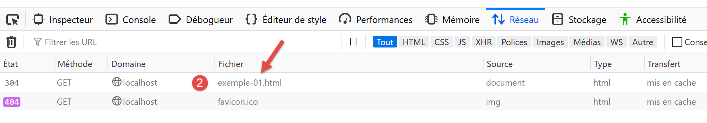
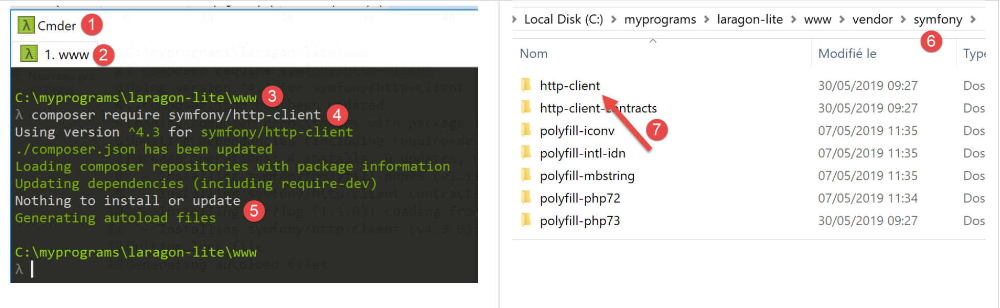
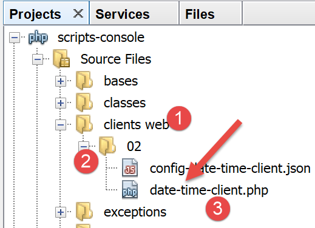
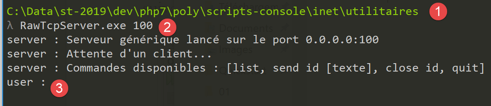
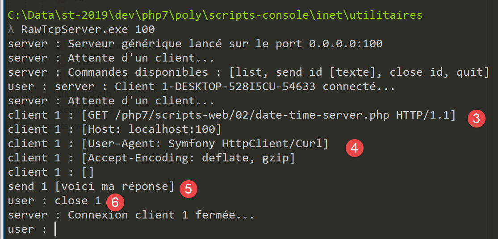
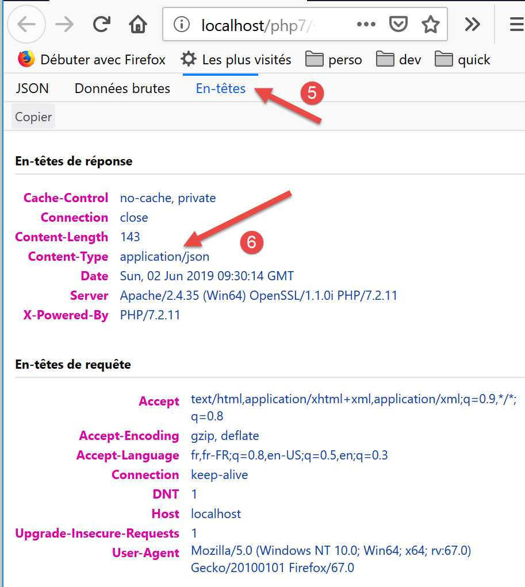
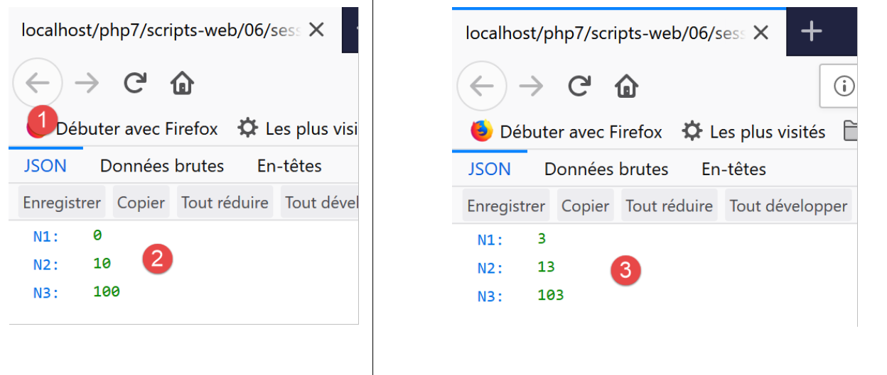
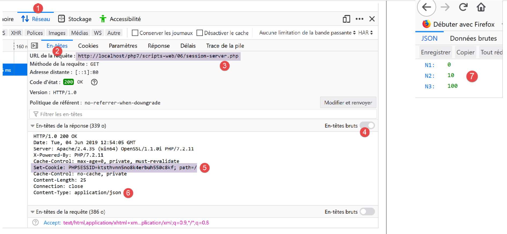
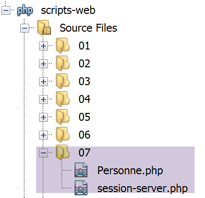

17. خدمات الويب
ملاحظة: نعني هنا بـ "خدمة الويب" أي تطبيق ويب يقدم البيانات الأولية التي يستهلكها العميل — وهو نص برمجي لوحدة التحكم في الأمثلة التالية. لا نهتم بأي تقنية معينة — مثل REST (REpresentational State Transfer) أو SOAP (Simple Object Access Protocol)، على سبيل المثال — والتي تقدم بيانات أولية بشكل أو بآخر بتنسيق محدد جيدًا. تُرجع REST JSON، بينما تُرجع SOAP XML. تحدد كل من هذه التقنيات بدقة كيفية استعلام العميل عن الخادم والتنسيق الذي يجب أن تتخذه استجابة الخادم. في هذه الدورة، سنكون أكثر مرونة فيما يتعلق بطبيعة طلب العميل واستجابة الخادم. ومع ذلك، فإن البرامج النصية المكتوبة والأدوات المستخدمة مشابهة لتلك الخاصة بتقنية REST.
17.1. مقدمة
نظرًا لأن برامج PHP يمكن تنفيذها بواسطة خادم ويب، فإن مثل هذا البرنامج يصبح برنامجًا من جانب الخادم قادرًا على خدمة عملاء متعددين. من منظور العميل، فإن استدعاء خدمة ويب يعادل طلب عنوان URL لتلك الخدمة. يمكن كتابة العميل بأي لغة، بما في ذلك PHP. في الحالة الأخيرة، نستخدم وظائف الشبكة التي تناولناها للتو. نحتاج أيضًا إلى معرفة كيفية "التواصل" مع خدمة الويب، أي فهم بروتوكول HTTP للتواصل بين خادم الويب وعملائه. كان هذا هو الغرض من قسم "الرابط".
سمح لنا عميل الويب الموصوف في قسم "الرابط" باستكشاف جزء من بروتوكول HTTP.

في أبسط صورها، تتم عمليات التبادل بين العميل والخادم على النحو التالي:
- يفتح العميل اتصالاً بالمنفذ 80 على خادم الويب؛
- يقدم طلبًا للحصول على مستند؛
- يرسل خادم الويب المستند المطلوب ويغلق الاتصال؛
- ثم يغلق العميل الاتصال؛
يمكن أن يكون المستند من أنواع مختلفة: نص بتنسيق HTML، صورة، فيديو... يمكن أن يكون مستندًا موجودًا (مستند ثابت) أو مستندًا تم إنشاؤه على الفور بواسطة برنامج نصي (مستند ديناميكي). في الحالة الأخيرة، نشير إلى برمجة الويب. يمكن كتابة البرنامج النصي لإنشاء المستندات ديناميكيًا بلغات مختلفة: PHP، Python، Perl، Java، Ruby، C#، VB.NET...
فيما يلي، سنستخدم نصوص PHP لإنشاء مستندات نصية ديناميكيًا.

- في [1]، يقوم العميل بإنشاء اتصال مع الخادم، ويطلب برنامج نصي PHP، وقد يرسل أو لا يرسل معلمات إلى ذلك البرنامج النصي؛
- في [2]، يقوم خادم الويب بتنفيذ البرنامج النصي PHP باستخدام مترجم PHP. يقوم البرنامج النصي بإنشاء مستند يتم إرساله إلى العميل [3]؛
- يقوم الخادم بإغلاق الاتصال. ويقوم العميل بنفس الشيء؛
يمكن لخادم الويب التعامل مع عدة عملاء في وقت واحد.
مع حزمة برامج [Laragon]، يكون خادم الويب هو خادم Apache، وهو خادم مفتوح المصدر من مؤسسة Apache (http://www.apache.org/). في التطبيقات التالية، يجب تشغيل [Laragon]:

يؤدي هذا إلى تشغيل خادم الويب Apache وكذلك نظام إدارة قواعد البيانات MySQL.
سيتم كتابة البرامج النصية التي ينفذها خادم الويب باستخدام أداة NetBeans. حتى الآن، قمنا بكتابة برامج نصية PHP يتم تنفيذها في بيئة وحدة التحكم:

يستخدم المستخدم وحدة التحكم لطلب تنفيذ برنامج نصي PHP وتلقي النتائج.
في تطبيقات العميل/الخادم التالية:
- يتم تنفيذ البرنامج النصي للعميل في بيئة وحدة التحكم؛
- يتم تنفيذ البرنامج النصي للخادم في سياق الويب؛

لا يمكن وضع البرنامج النصي PHP الخاص بجانب الخادم في أي مكان في نظام الملفات. في الواقع، يبحث خادم الويب عن المستندات الثابتة والديناميكية المطلوبة منه في المواقع المحددة في ملفات التكوين. يؤدي التكوين الافتراضي لـ Laragon إلى البحث عن المستندات في المجلد <Laragon>/www، حيث <Laragon> هو مجلد تثبيت Laragon . وبالتالي، إذا طلب عميل ويب مستندًا D بعنوان URL [http://localhost/D]، فسيقوم خادم الويب بتقديم المستند D الموجود في المسار [<Laragon>/www/D].
في الأمثلة التالية، سنضع نصوص الخادم في المجلد [www/php7/scripts-web]. إذا كان اسم نص الخادم S.php، فسيتم طلبه من خادم الويب باستخدام عنوان URL [http://localhost/php7/scripts-web/S.php]. سيتم بعد ذلك تقديم المستند [<Laragon>/www/php7/scripts-web/S.php].

- في [1]، المجلد [<laragon>/www]؛
- في [2]، المجلد [php7/scripts-web]؛
لإنشاء نصوص برمجية للخادم باستخدام NetBeans، سنقوم بما يلي:

- في [1-2]، نقوم بإنشاء مشروع جديد
- في [3-4]، نختار فئة [PHP] ومشروع [PHP Application]

- في [5]، اسم المشروع؛
- في [6]، نحدد مجلد المشروع في نظام الملفات. لاحظ أن هذا المجلد موجود في [<laragon>/www]، حيث ينبغي أن يكون؛
- في [7-8]، نقبل القيم الافتراضية؛
- في [9-10]، اقبل القيم الافتراضية المقدمة. في [10]، لاحظ أن عنوان URL للبرامج النصية التي سنضعها في هذا المشروع سيبدأ بالمسار [http://localhost/php7/scripts-web/]؛

- في [11]، يتم عرض أطر عمل الويب المكتوبة بلغة PHP عليك. هذه الأطر ضرورية بمجرد أن ينمو حجم تطبيق الويب؛
- في [12]، يمكنك إضافة مكتبات PHP باستخدام أداة [Composer]. استخدمنا هذه الأداة مرتين في نافذة [Terminal] في Laragon:
- لتثبيت مكتبة [SwiftMailer]، التي تتيح لك إرسال رسائل البريد الإلكتروني؛
- لتثبيت مكتبة [php-mime-mail-parser]، التي تتيح لك قراءة رسائل البريد الإلكتروني؛
- في [13]، بمجرد تأكيد معالج إنشاء المشروع، يظهر المشروع في [13] في علامة التبويب "المشاريع"؛
17.2. كتابة صفحة ثابتة
ملاحظة: بالنسبة لبقية هذا الدليل، يجب أن يكون [Laragon] قيد التشغيل.
سنوضح كيفية إنشاء صفحة HTML (لغة ترميز النص التشعبي) ثابتة باستخدام NetBeans:

- في [1-5]، نقوم بإنشاء مجلد باسم [01]؛


- في [6-12]، نقوم بإنشاء ملف HTML باسم [example-01.html]؛
يتم إنشاء ملف [example-01.html] بالمحتوى المعبأ مسبقًا التالي (مايو 2019):
<!DOCTYPE html>
<!--
To change this license header, choose License Headers in Project Properties.
To change this template file, choose Tools | Templates
and open the template in the editor.
-->
<html>
<head>
<title>TODO supply a title</title>
<meta charset="UTF-8">
<meta name="viewport" content="width=device-width, initial-scale=1.0">
</head>
<body>
<div>TODO write content</div>
</body>
</html>
دعونا نقوم بتحديث محتواه على النحو التالي:
<!DOCTYPE html>
<html>
<head>
<title>PHP7 par l'exemple</title>
<meta charset="UTF-8">
<meta name="viewport" content="width=device-width, initial-scale=1.0">
</head>
<body>
<div><b>Ceci est un exemple de page statique</b></div>
</body>
</html>
لقد قمنا بتغيير عنوان الصفحة (السطر 4) ومحتواها (السطر 9).
الآن دعونا نجعل خادم Apache الخاص بـ Laragon يعرض صفحة HTML هذه:

- في [1-2]، يقوم خادم لارافون أباتشي بعرض الصفحة؛
- في [3]، عنوان URL للصفحة المعروضة؛
- في [4]، العنوان الذي قمنا بتعديله؛
- في [5]، المحتوى الذي قمنا بتعديله؛
الصفحة المعروضة هي صفحة ثابتة: يمكنك إعادة تحميلها عدة مرات كما تريد في المتصفح (F5)، وسيتم عرض نفس المحتوى دائمًا.
توفر معظم المتصفحات إمكانية الوصول إلى البيانات المتبادلة بين العميل والخادم، كما هو موضح في قسم "الرابط". في Firefox (اعتبارًا من مايو 2019)، اضغط على F12 للوصول إلى هذه البيانات:

كما هو موضح في [1]، دعونا نعيد تحميل الصفحة (F5):

- في [2]، المستند الذي تم تحميله بواسطة المتصفح: نحدده؛

- في [5]، يتم تحديد المستند المراد تحليله؛
- في [3-4]، نطلب عرض التبادلات بين العميل والخادم؛
- في [6]، هذه التبادلات؛

- في [7]، حدد علامة تبويب الرؤوس؛
- في [8]، عنوان URL الذي طلبه المتصفح؛
- في [9]، الأمر المرسل إلى الخادم هو [GET http://localhost/php7/scripts-web/01/exemple-01.html HTTP/1.1]؛
- في [10]، رؤوس HTTP التي أرسلها المتصفح (العميل) لاحقًا؛
- في [11]، رؤوس HTTP لاستجابة الخادم؛

- في [12-14]، استجابة الخادم المرسلة بعد رؤوس HTTP؛
- في [14]، نرى أن متصفح العميل قد تلقى صفحة HTML التي أنشأناها. ثم قام بتفسير هذا الكود لعرض ما يلي:

17.3. إنشاء صفحة ديناميكية في PHP
سنقوم الآن بكتابة صفحة ديناميكية بلغة PHP:


- في [1-8]، نقوم بإنشاء صفحة [example-01.php]؛
يتم إنشاء ملف [example-01.php] مملوءًا مسبقًا على النحو التالي (مايو 2019):
<!DOCTYPE html>
<!--
To change this license header, choose License Headers in Project Properties.
To change this template file, choose Tools | Templates
and open the template in the editor.
-->
<html>
<head>
<meta charset="UTF-8">
<title></title>
</head>
<body>
<?php
// put your code here
?>
</body>
</html>
نقوم بتعديل الكود أعلاه على النحو التالي:
<!DOCTYPE html>
<html>
<head>
<meta charset="UTF-8">
<title>Exemple de page dynamique</title>
</head>
<body>
<?php
// time : nb de millisecondes entre le moment présent et le 01/01/1970
// format affichage date-heure
// d : jour sur 2 chiffres
// m : mois sur 2 chiffres
// y : année sur 2 chiffres
// H : heure 0,23
// I : minutes
// s: secondes
print "<b>Date et heure du jour : </b>" . date("d/m/y H:i:s", time());
?>
</body>
</html>
تعليقات
- السطر 5: قمنا بتغيير عنوان الصفحة؛
- السطر 17: يطبع التاريخ والوقت الحاليين؛
بشكل أساسي، يقوم البرنامج النصي PHP أعلاه بطباعة الوقت الحالي على وحدة التحكم. ومع ذلك، عند تنفيذه بواسطة خادم ويب، يتم إعادة توجيه ناتج عبارة [print] —الذي يتم توجيهه عادةً إلى وحدة التحكم الخاصة بتنفيذ البرنامج النصي—هنا إلى الاتصال الذي يربط الخادم بعميله. لذلك، في سياق الويب، يرسل البرنامج النصي أعلاه الوقت الحالي كنص إلى العميل، وهو في هذه الحالة متصفح.
دعونا نقوم بتشغيل البرنامج النصي [example-01.php]:

- في [3]، عنوان URL المطلوب من خادم الويب Apache؛
- في [4]، عنوان الصفحة الذي قمنا بتغييره؛
- في [5]، المحتوى الذي تم إنشاؤه بواسطة عبارة [print]؛
هذه صفحة ديناميكية لأنه إذا أعدت تحميل الصفحة عدة مرات في المتصفح (F5)، يتغير محتواها (يتغير الوقت).
تلقى المتصفح دفقًا من HTML. لعرضه، عليك عرض كود مصدر الصفحة في المتصفح:

- للوصول إلى القائمة [1]، انقر بزر الماوس الأيمن على الصفحة في المتصفح؛
- في [2]، عنوان URL للصفحة [example-01.php] ولكن مسبوق بـ [view-source:] [3]؛
- في [4]، محتوى HTML الذي عرضه المتصفح؛
لذلك من المهم تذكر أن البرنامج النصي PHP المخصص للتنفيذ بواسطة خادم الويب يجب أن ينتج دفق HTML.
لنلقِ نظرة الآن (F12) على رؤوس HTTP التي أرسلها الخادم إلى متصفح العميل:

- في [3]، رأس HTTP لم يكن موجودًا عند طلب الصفحة الثابتة. يشير هذا الرأس إلى أن استجابة الخادم تم إنشاؤها بواسطة برنامج نصي PHP؛
لقد رأينا أن استجابة الخادم (إخراج HTML هنا) يمكن إنشاؤها بواسطة برنامج نصي PHP. يمكن للبرنامج النصي أيضًا إنشاء رؤوس HTTP وجميع عناصر استجابة الخادم تقريبًا.
17.4. أساسيات HTML
لن يتعمق هذا الفصل في برمجة الويب بلغة PHP. يتم تطوير تطبيق ويب MVC في القسم المرتبط. يركز هذا الفصل بدلاً من ذلك على خدمات الويب: صفحات PHP التي تنقل البيانات، عبر خادم ويب، إلى عملاء PHP آخرين. ومع ذلك، رأينا أنه من المفيد تزويد القارئ ببعض أساسيات HTML.
يمكن لمتصفح الويب عرض مستندات متنوعة، وأكثرها شيوعًا هي مستندات HTML (لغة ترميز النص التشعبي). تتكون هذه المستندات من نص منسق بعلامات على شكل <tag>text</tag>. وبالتالي، فإن النص <b>important</b> سيعرض النص "important" بخط عريض. هناك علامات مستقلة، مثل علامة <hr/>، التي تعرض خطًا أفقيًا. لن نتطرق إلى جميع العلامات التي يمكن العثور عليها في نص HTML. هناك العديد من برامج WYSIWYG التي تسمح لك بإنشاء صفحة ويب دون كتابة سطر واحد من كود HTML. تقوم هذه الأدوات تلقائيًا بإنشاء كود HTML لتخطيط تم إنشاؤه باستخدام الماوس وعناصر التحكم المحددة مسبقًا. يمكنك بذلك إدراج (باستخدام الماوس) جدولًا في الصفحة ثم عرض كود HTML الذي أنشأه البرنامج لاكتشاف العلامات التي يجب استخدامها لتعريف جدول على صفحة ويب. الأمر بهذه البساطة. علاوة على ذلك، تعد معرفة HTML أمرًا ضروريًا لأن تطبيقات الويب الديناميكية يجب أن تولد كود HTML بنفسها لإرساله إلى عملاء الويب. يتم إنشاء هذا الكود برمجيًا، ويجب عليك بالطبع معرفة ما يجب إنشاؤه حتى يتلقى العميل صفحة الويب التي يريدها.
باختصار، لست بحاجة إلى معرفة لغة HTML بالكامل للبدء في برمجة الويب. ومع ذلك، فإن هذه المعرفة ضرورية ويمكن اكتسابها باستخدام أدوات إنشاء صفحات الويب WYSIWYG مثل DreamWeaver وعشرات غيرها. هناك طريقة أخرى لاكتشاف تعقيدات HTML وهي تصفح الويب وعرض كود المصدر للصفحات التي تحتوي على عناصر مثيرة للاهتمام لم تصادفها بعد.
انظر المثال التالي، الذي يسلط الضوء على بعض العناصر الشائعة في مستند الويب، مثل:
- جدول؛
- صورة؛
- رابط.

عادةً ما يكون مستند HTML بالشكل التالي:
<html> <head> <title>عنوان</title> ... </head> <سمات النص> ... </body></html>
يتم تضمين المستند بأكمله بين علامتي <html>…</html>. ويتكون من جزأين:
- <head>…</head>: هذا هو الجزء غير القابل للعرض من المستند. يوفر معلومات للمتصفح الذي سيعرض المستند. غالبًا ما يحتوي على علامة <title>…</title>، التي تحدد النص الذي سيتم عرضه في شريط عنوان المتصفح. وقد يحتوي أيضًا على علامات أخرى، لا سيما تلك التي تحدد الكلمات المفتاحية للوثيقة، والتي تستخدمها محركات البحث لاحقًا. قد يحتوي هذا القسم أيضًا على نصوص برمجية، مكتوبة عادةً بلغة JavaScript أو VBScript، والتي سيتم تنفيذها بواسطة المتصفح.
- <سمات body>…</body>: هذا هو القسم الذي سيعرضه المتصفح. تخبر علامات HTML الموجودة في هذا القسم المتصفح بالتنسيق المرئي "المطلوب" للمستند. يفسر كل متصفح هذه العلامات بطريقته الخاصة. ونتيجة لذلك، قد يعرض متصفحان نفس مستند الويب بشكل مختلف. وهذا عمومًا أحد التحديات التي يواجهها مصممو الويب.
فيما يلي كود HTML لمستندنا المثال:
<!DOCTYPE html>
<html xmlns="http://www.w3.org/1999/xhtml">
<head>
<meta http-equiv="Content-Type" content="text/html; charset=utf-8" />
<title>Quelques balises HTML</title>
</head>
<body style="background-image: url(images/standard.jpg)">
<h1 style="text-align: left">Quelques balises HTML</h1>
<hr />
<table border="1">
<thead>
<tr>
<th>Colonne 1</th>
<th>Colonne 2</th>
<th>Colonne 3</th>
</tr>
</thead>
<tbody>
<tr>
<td>cellule(1,1)</td>
<td style="text-align: center;">cellule(1,2)</td>
<td>cellule(1,3)</td>
</tr>
<tr>
<td>cellule(2,1)</td>
<td>cellule(2,2)</td>
<td>cellule(2,3</td>
</tr>
</tbody>
</table>
<br/><br/>
<table border="0">
<tr>
<td>Une image</td>
<td>
<img border="0" src="images/cerisier.jpg"/></td>
</tr>
<tr>
<td>Le site de Polytech'Angers</td>
<td><a href="http://www.polytech-angers.fr/fr/index.html">ici</a></td>
</tr>
</table>
</body>
</html>
علامات HTML وأمثلة | |
<title>بعض علامات HTML</title> (السطر 5) سيظهر النص [بعض علامات HTML] في شريط عنوان المتصفح عند عرض المستند | |
<hr />: يعرض خطًا أفقيًا (السطر 10) | |
<سمات الجدول>….</table>: لتعريف الجدول (السطران 12 و32) <thead>…</thead>: لتعريف عناوين الأعمدة (السطران 13 و19) <tbody>…</tbody>: لتعريف محتوى الجدول (السطران 20 و31) <tr attributes>…</tr>: لتعريف صف (السطران 21 و25) <سمات td>…</td>: لتعريف خلية (السطر 22) أمثلة: <table border="1">…</table>: تحدد سمة border سماكة حدود الجدول <td style="text-align: center;">cell(1,2)</td> (السطر 23): تحدد خلية سيكون محتواها cell(1,2). سيتم توسيط هذا المحتوى أفقيًا (text-align: center). | |
<img border="0" src="images/cherrytree.jpg"/> (السطر 38): يُحدد صورة بدون حدود (border="0")، وملفها المصدر هو [images/cherrytree.jpg] الموجود على خادم الويب (src="images/cherrytree.jpg"). يوجد هذا الرابط في مستند ويب يمكن الوصول إليه عبر عنوان URL http://localhost/php7/scripts-web/01/balises.html. لذلك، سيطلب المتصفح عنوان URL http://localhost/php7/scripts-web/01/images/cerisier.jpg لاسترداد الصورة المشار إليها هنا. | |
<a href="http://www.polytech-angers.fr/fr/index.html">here</a> (السطر 42): يجعل النص "here" بمثابة رابط إلى عنوان URL http://www.polytech-angers.fr/fr/index.html. | |
<body style="background-image: url(images/standard.jpg)"> (السطر 8): يشير إلى أن الصورة التي سيتم استخدامها كخلفية للصفحة موجودة في عنوان URL [images/standard.jpg] على خادم الويب. في سياق مثالنا، سيطلب المتصفح عنوان URL http://localhost/php7/scripts-web/01/images/standard.jpg لاسترداد صورة الخلفية هذه. |
يمكننا أن نرى في هذا المثال البسيط أنه لإنشاء المستند بأكمله، يجب على المتصفح إرسال ثلاثة طلبات إلى الخادم:
- http://localhost/php7/scripts-web/01/images/balises.html لاسترداد مصدر HTML للمستند
- http://localhost/php7/scripts-web/01/images/cerisier.jpg لاسترداد الصورة cerisier.jpg
- http://localhost/php7/scripts-web/01/images/standard.jpg لاسترداد صورة الخلفية standard.jpg
يظهر ذلك من خلال حركة مرور الشبكة بين العميل والخادم (F12 في المتصفح):

- في [3-5]، نرى الطلبات الثلاثة التي أرسلها المتصفح؛
17.5. تحويل صفحة ثابتة إلى صفحة ديناميكية
دعونا نوضح كيف يمكننا تحويل صفحة HTML [example-01.html] إلى صفحة ديناميكية. انسخ المحتوى

لقد نسخنا محتوى [example-01.html] إلى الملف [page-01.php]. إذا قمنا بتشغيل [2] هذا البرنامج النصي للويب، فسنرى ما يلي في المتصفح:

- في [3]، عنوان URL المطلوب؛
- في [4]، عنوان الصفحة؛
- في [5]، محتوى الصفحة؛
إذا قمنا بعرض الكود الذي تلقّاه المتصفح، فسنجد ما يلي:

- في [7]، كود HTML الموجود في البرنامج النصي [example-01.php]
قام مترجم PHP بتفسير البرنامج النصي [page-01.php] وأنتج نفس مخرجات HTML مثل الصفحة الثابتة [example-01.html]. في البرنامج النصي [page-01.php]، لم يكن هناك PHP، بل HTML فقط. وهذا يعلمنا شيئًا: عندما يجد مترجم PHP HTML في برنامج نصي PHP، فإنه يتركه كما هو ويرسله كما هو إلى العميل.
الآن دعونا نضيف بعض تعليمات PHP إلى البرنامج النصي [page-01.php] حتى يكون لدى مترجم PHP ما يقوم به:
<!DOCTYPE html>
<html>
<head>
<title><?php print $page->title ?></title>
<meta charset="UTF-8">
<meta name="viewport" content="width=device-width, initial-scale=1.0">
</head>
<body>
<div><b><?php print $page->contents ?></b></div>
</body>
</html>
في السطرين 4 و9، أضفنا كود PHP لإنشاء عنوان الصفحة ومحتواها ديناميكيًا. هنا، نفترض أن المتغير [$page] هو كائن يحتوي على البيانات المراد عرضها.
إذا قمنا بتشغيل هذا الكود الجديد، فسنحصل على النتيجة التالية في المتصفح:

- في [1]، عنوان URL المطلوب؛
- في [2]، تعذر عرض عنوان الصفحة لأن المتغير [$page] لم يتم تعريفه؛
- في [3]، ينطبق الأمر نفسه على المحتوى؛
الآن، دعونا نكتب البرنامج النصي التالي [example-02.php]:

سيكون النص البرمجي [example-02.php] كما يلي:
<?php
// define the page elements to be displayed
$page=new \stdclass();
$page->title="Un nouveau titre";
$page->contents="Un nouveau contenu généré dynamiquement";
// display [page-01]
require_once "page-01.php";
- الأسطر 4-6: نحدد الكائن [$page]؛
- السطر 8: قم بتضمين البرنامج النصي [page-01.php]. سيتم بعد ذلك تفسير الكود الموجود في هذا البرنامج النصي:
- يتم الآن تعريف المتغير [$page] وسيستخدمه مترجم PHP؛
- سيتم إرسال كود HTML من [page-01.php] كما هو إلى العميل؛
- سيتم تضمين نتائج عمليات [print] في PHP في دفق النص المرسل إلى العميل؛
الآن، إذا قمنا بتشغيل البرنامج النصي للويب [example-02.php]، فسنحصل على ما يلي في المتصفح:

إذا قمنا بعرض محتوى النص الذي استلمه المتصفح:

- تم استبدال كود PHP الذي كان موجودًا في [2] و[3] بنتائج الأمرين [print]؛
من هذا المثال، يمكننا استخلاص نقطتين رئيسيتين:
- يمكن عزل صفحات HTML المخصصة للمتصفح في نصوص PHP تحتوي فقط على كود HTML وبعض الأجزاء الديناميكية التي تم إنشاؤها بواسطة كود PHP. يجب أن يكون كود PHP في هذه الصفحات أقل ما يمكن؛
- يجب عزل كل المنطق الذي يولد البيانات الديناميكية المضمنة في صفحات HTML في نصوص PHP خالصة، لا تحتوي على أي كود لعرض الصفحة (HTML، CSS، JavaScript، إلخ)؛
وهذا يسمح بفصل المهام:
- مهمة إنشاء صفحات الويب المراد عرضها (HTML، CSS، JavaScript، إلخ)؛
- مهمة منطق تطبيق الويب الذي نقوم ببنائه. يمكن تنفيذ هذا المنطق باستخدام بنية ثلاثية المستويات، تمامًا كما فعلنا مع نصوص وحدة التحكم؛
بعد ذلك، سنقوم ببناء نصوص ويب محددة؛
- وستقوم هذه البرامج بإرسال البيانات فقط إلى العميل دون أي عناصر عرض (HTML، CSS، JavaScript). وبالتالي، ستكون بمثابة خوادم بيانات بدلاً من صفحات ويب؛
- سيكون عملاء نصوص الويب هذه عبارة عن نصوص برمجية للوحدة المركزية (الكونسول) ستسترد البيانات المرسلة من الخادم وتعالجها؛
17.6. تطبيق تاريخ/وقت العميل/الخادم
نحن الآن في التكوين التالي:

سنكتب:
- نص برمجي ويب [1] يرسل التاريخ والوقت الحاليين إلى عميله؛
- نص برمجي للوحدة [2] سيعمل كعميل للنص البرمجي للويب: سيسترد التاريخ والوقت المرسَلين من النص البرمجي للويب ويعرضهما على وحدة التحكم؛

- في [1]، البرنامج النصي للويب [date-time-server.php]؛
- في [2]، البرنامج النصي لوحدة التحكم [date-time-client]، وهو عميل البرنامج النصي للويب؛
17.6.1. نص الخادم
لقد كتبنا بالفعل نصًا برمجيًا للويب يولد التاريخ والوقت الحاليين في القسم المرتبط. وكان النص البرمجي التالي [example-01.php]:
<!DOCTYPE html>
<html>
<head>
<meta charset="UTF-8">
<title>Exemple de page dynamique</title>
</head>
<body>
<?php
// time : nb de millisecondes depuis 01/01/1970
// format affichage date-heure
// d: jour sur 2 chiffres
// m: mois sur 2 chiffres
// y : année sur 2 chiffres
// H : heure 0,23
// i : minutes
// s: secondes
print "<b>Date et heure du jour : </b>" . date("d/m/y H:i:s", time());
?>
</body>
</html>
قلنا إننا سنكتب خوادم البيانات: البيانات الأولية بدون ترميز HTML. سيكون نص البرنامج النصي للخادم [date-time-server.php] كما يلي:
<?php
// set header HTP [Content-Type]
header('Content-Type: text/plain; charset=UTF-8');
//
// send date and time
// time: number of milliseconds since 01/01/1970
// date-time display format
// d: 2-digit day
// m: 2-digit month
// y: 2-digit year
// H: hour 0.23
// i : minutes
// s: seconds
print date("d/m/y H:i:s", time());
- السطر 4: نضبط رأس HTTP [Content-Type]، الذي يُخبر العميل بطبيعة المستند الذي سيتلقاه. حتى الآن، كان [Content-Type] هو: [Content-Type: text/html; charset=UTF-8]. هنا، نخبر العميل أن المستند عبارة عن نص عادي بدون ترميز HTML. هذا ليس مهمًا لعميل وحدة التحكم لدينا، الذي لن يستخدم هذا الرأس. إنه أكثر أهمية لعملاء المتصفح، الذين يستخدمون هذا الرأس؛
دعونا نقوم بتشغيل هذا البرنامج النصي من جانب الخادم:

إذا فحصنا استجابة الخادم في المتصفح (F12)، نرى في [5] رأس HTTP الذي حدده البرنامج النصي للخادم، وفي [8] المستند النصي المستلم؛

17.6.2. نص البرمجة من جانب العميل
في القسم السابق، قمنا بتطوير العديد من عملاء HTTP. يمكننا استخدامها لاسترداد المستند النصي الذي أرسله البرنامج النصي للخادم [date-time-server.php]. لن نفعل ذلك. كما فعلنا مع بروتوكولي SMTP و IMAP، سنستخدم مكتبة تابعة لجهة خارجية، وهي مكون [HttpClient] من إطار عمل Symfony [https://symfony.com/doc/master/components/http_client.html].
كما هو الحال مع المكتبتين السابقتين، نستخدم أداة [Composer] لتثبيت مكون [HttpClient] في Symfony. في نافذة [Terminal] في Laragon (انظر القسم المرتبط)، أدخل الأمر التالي:

- في [3]، تحقق من أنك في الدليل [<laragon>/www/]، حيث <laragon> هو دليل تثبيت Laragon؛
- في [4]، الأمر [composer] الذي يقوم بتثبيت مكتبة Symfony [HttpClient]؛
- في [5]، لم يتم تثبيت أي شيء لأن مكتبة [HttpClient] كانت مثبتة بالفعل على هذا الجهاز؛
- في [6-7]، تظهر مجلدات جديدة في [<laragon>/www/vendor/symfony]؛
بدلاً من [5]، يجب أن يكون لديك شيء مثل ما يلي:
C:\myprograms\laragon-lite\www
? composer require symfony/http-client
Using version ^4.3 for symfony/http-client
./composer.json has been updated
Loading composer repositories with package information
Updating dependencies (including require-dev)
Package operations: 4 installs, 0 updates, 0 removals
- Installing symfony/polyfill-php73 (v1.11.0): Downloading (100%)
- Installing symfony/http-client-contracts (v1.1.1): Downloading (100%)
- Installing psr/log (1.1.0): Loading from cache
- Installing symfony/http-client (v4.3.0): Downloading (100%)
Writing lock file
Generating autoload files
تأكد من تضمين المجلد [<laragon>/www/vendor] في [مسار التضمين] لمشروعك (انظر القسم المرتبط):

بمجرد الانتهاء من ذلك، يمكننا كتابة البرنامج النصي لوحدة التحكم [date-time-client.php]:

سيستخدم البرنامج النصي للوحدة [date-time-client.php] ملف JSON التالي [config-date-time-client.json]:
- السطر 2: عنوان URL لبرنامج الخادم النصي؛
سيكون البرنامج النصي للعميل [date-time-client.php] كما يلي:
<?php
// service customer date / time
//
// error management
//ini_set("error_reporting", E_ALL & ~ E_WARNING & ~E_DEPRECATED & ~E_NOTICE);
//ini_set("display_errors", "off");
//
// dependencies
require_once 'C:/myprograms/laragon-lite/www/vendor/autoload.php';
use Symfony\Component\HttpClient\HttpClient;
// customer configuration
const CONFIG_FILE_NAME = "config-date-time-client.json";
// we retrieve the configuration
if (!file_exists(CONFIG_FILE_NAME)) {
print "Le fichier de configuration [" . CONFIG_FILE_NAME . "] n'existe pas\n";
exit;
}
if (!$config = \json_decode(\file_get_contents(CONFIG_FILE_NAME), true)) {
print "Erreur lors de l'exploitation du fichier de configuration jSON [" . CONFIG_FILE_NAME . "]\n";
exit;
}
// create a HTTP customer
$httpClient = HttpClient::create();
try {
// query
$response = $httpClient->request('GET', $config['url']);
// answer status
$statusCode = $response->getStatusCode();
print "---Réponse avec statut : $statusCode\n";
// we retrieve the headers
print "---Entêtes de la réponse\n";
$headers = $response->getHeaders();
foreach ($headers as $type => $value) {
print "$type: " . $value[0] . "\n";
}
// retrieve the body of the reply
$content = $response->getContent();
// we display it
print "---Réponse du serveur : [$content]\n";
} catch (TypeError | RuntimeException $ex) {
// error is displayed
print "Erreur de communication avec le serveur : " . $ex->getMessage() . "\n";
exit;
}
تعليقات
- السطر 10: كما فعلنا مع المكتبات السابقة، نقوم بتحميل الملف [<laragon>/www/vendor/autoload.php]؛
- السطر 11: نعلن فئة [HttpClient] التي سنستخدمها؛
- الأسطر 13–24: نسترد تكوين البرنامج النصي من قاموس [$config]؛
- السطر 27: نقوم بإنشاء كائن من النوع [HttpClient]؛
- السطر 31: نطلب عنوان URL لبرنامج الخادم النصي باستخدام طلب GET: [GET URL HTTP/1.1]. هذه العملية غير متزامنة. يستمر التنفيذ في السطر 33 دون انتظار الرد؛
- السطر 33: يتم استرداد حالة الاستجابة. توجد هذه الحالة في أول رأس HTTP يعيده الخادم. وبالتالي، إذا كان هذا الرأس هو [HTTP/1.1 200 OK]، فإن حالة الاستجابة هي 200. هذه العملية معطلة: لا يستأنف التنفيذ إلا بعد أن يتلقى العميل الاستجابة الكاملة من الخادم؛
- السطر 37: يتم طلب رؤوس HTTP للاستجابة؛
- السطر 42: نسترد المستند الذي أعاده الخادم: نعلم أن هذا المستند هو نص.
- الأسطر 45-49: في حالة حدوث خطأ، يتم عرض رسالة الخطأ؛
عند تنفيذ البرنامج النصي للعميل (يجب أن يكون Laragon قيد التشغيل حتى يمكن الوصول إلى البرنامج النصي للخادم)، يتم عرض النتيجة التالية على وحدة التحكم:
---Réponse avec statut : 200
---Entêtes de la réponse
date: Thu, 30 May 2019 14:42:03 GMT
server: Apache/2.4.35 (Win64) OpenSSL/1.1.0i PHP/7.2.11
x-powered-by: PHP/7.2.11
content-length: 17
content-type: text/plain; charset=UTF-8
---Réponse du serveur : [30/05/19 14:42:03]
تم استرداد التاريخ والوقت الحاليين بنجاح في السطر 8.
قد تكون مهتمًا بمعرفة ما أرسله البرنامج النصي للعميل إلى الخادم. للقيام بذلك، سنستخدم خادم TCP العام الخاص بنا (انظر قسم "الرابط"):

- في [1]، مجلد الأدوات المساعدة؛
- في [2]، يعمل خادم TCP على المنفذ 100؛
- في [3]، في انتظار أمر يتم إدخاله عبر لوحة المفاتيح؛
نقوم بتعديل ملف تكوين البرنامج النصي [date-time-client.php]:
{
"url": "http://localhost:100/php7/scripts-web/02/date-time-server.php"
}
هذه المرة، يتصل العميل بالخادم [localhost] على المنفذ 100. وبالتالي، سيتم استدعاء خادم TCP العام الخاص بنا. عندما نقوم بتشغيل البرنامج النصي الخاص بوحدة التحكم [date-time-client.php]، تتغير وحدة التحكم الخاصة بخادم TCP العام على النحو التالي:

- في [3]، طلب HTTP GET الذي أنشأه البرنامج النصي للعميل؛
- في [4]، توقيع البرنامج النصي لوحدة التحكم؛
- في [5]، استجابة الخادم لبرنامج العميل النصي. لاحظ أن هذه ليست استجابة HTTP صالحة:
- يجب أن تكون هناك رؤوس HTTP؛
- متبوعة بسطر فارغ؛
- ثم المستند النصي المرسل إلى العميل؛
- في [6]، نغلق الاتصال مع البرنامج النصي للعميل حتى يكتشف أنه قد تلقى الاستجابة بالكامل؛
في البرنامج النصي الخاص بالعميل، تعرض وحدة التحكم ما يلي:

- في [7]، ما تلقّاه عميل Symfony؛
17.6.3. نص الخادم – الإصدار 2
بشكل افتراضي، وظائف PHP لكتابة نص برمجي ويب ليست موجهة للكائنات. على جانب الخادم، نحن مضطرون بالتالي إلى مزج فئات ووظائف PHP التقليدية. لتحقيق أسلوب برمجة أكثر اتساقًا، سنستخدم مكتبة [HttpFoundation] من إطار عمل Symfony. وهي تغلف جميع وظائف PHP التقليدية لخدمة ويب في نظام من الفئات والواجهات. تتوفر وثائق المكتبة على [https://symfony.com/doc/current/components/http_foundation.html] (مايو 2019).
لتثبيت المكتبة، اتبع هذه الخطوات في محطة Laragon (انظر القسم المرتبط):

- [2-3]: تأكد من أنك في المجلد [<laragon>/www]؛
- [4]: الأمر [composer]، الذي سيقوم بتثبيت مكتبة [HttpFoundation]؛
- [5]: في هذا المثال، كانت المكتبة مثبتة بالفعل؛
عند التثبيت لأول مرة، سترى سجلات وحدة التحكم مشابهة لما يلي:
C:\myprograms\laragon-lite\www
? composer require symfony/http-foundation
Using version ^4.3 for symfony/http-foundation
./composer.json has been updated
Loading composer repositories with package information
Updating dependencies (including require-dev)
Package operations: 2 installs, 0 updates, 0 removals
- Installing symfony/mime (v4.3.0): Downloading (100%)
- Installing symfony/http-foundation (v4.3.0): Downloading (100%)
Writing lock file
Generating autoload files
الإصدار الثاني من خادم الويب [date-time-server-2.php] هو كما يلي:
<?php
// using Symfony libraries
// dependencies
require_once 'C:/myprograms/laragon-lite/www/vendor/autoload.php';
use Symfony\Component\HttpFoundation\Response;
// we set the Content-Type header
$response=new Response();
$response->headers->set("content-type","text/plain");
$response->setCharset("utf-8");
// set the content of the response
//
// send date and time
// time: number of milliseconds since 01/01/1970
// date-time display format
// d: 2-digit day
// m: 2-digit month
// y: 2-digit year
// H: hour 0.23
// i : minutes
// s: seconds
$response->setContent(date("d/m/y H:i:s", time()));
// we send the answer
$response->send();
تعليقات
- السطر 7: تتولى فئة [Response] من مكتبة [HttpFoundation] في Symfony معالجة الاستجابة الكاملة لعملاء خدمة الويب؛
- السطر 10: إنشاء مثيل لفئة [Response]؛
- السطر 11: يحدد أن الاستجابة من النوع [text/plain]؛
- السطر 12: الاستجابة هي نص UTF-8؛
- السطر 25: يتم تعيين نص الاستجابة إلى المحتوى المطلوب من قبل العميل؛
- السطر 28: يتم إرسال الاستجابة إلى العميل؛
17.6.4. نص برمجي العميل – الإصدار 2
يظل البرنامج النصي للعميل دون تغيير. نقوم فقط بتعديل ملف التكوين الخاص به [config-date-time-client.json]:
النتائج هي نفسها كما في الإصدار 1.
17.7. خادم بيانات JSON
يمكن أن تتكون استجابة البرنامج النصي على الويب من نقاط بيانات متعددة يمكن تنظيمها في مصفوفات وكائنات. يمكن للبرنامج النصي بعد ذلك إرسال هذه العناصر المختلفة ضمن سلسلة JSON يقوم العميل بفك تشفيرها.

17.7.1. نص الخادم
يستخدم البرنامج النصي [json-server.php] فئة [Person] التالية:
<?php
namespace Modèles;
class Personne implements \JsonSerializable {
// attributes
private $nom;
private $prénom;
private $âge;
// convert associative array to object [Person]
public function setFromArray(array $assoc): Personne {
// initialize the current object with the associative array
foreach ($assoc as $attribute => $value) {
$this->$attribute = $value;
}
// result
return $this;
}
// getters and setters
public function getNom() {
return $this->nom;
}
public function getPrénom() {
return $this->prénom;
}
public function setNom($nom) {
$this->nom = $nom;
return $this;
}
public function setPrénom($prénom) {
$this->prénom = $prénom;
return $this;
}
public function getÂge() {
return $this->âge;
}
public function setÂge($âge) {
$this->âge = $âge;
return $this;
}
// toString
public function __toString(): string {
return "Personne [$this->prénom, $this->nom, $this->âge]";
}
// implements the JsonSerializable interface
public function jsonSerialize(): array {
// render an associative array with the object's attributes as keys
// this table can then be encoded as jSON
return get_object_vars($this);
}
// convert a jSON to a [Person] object
public static function jsonUnserialize(string $json): Personne {
// we create a person from the string jSON
return (new Personne())->setFromArray(json_decode($json, true));
}
}
تعليقات
- السطر 5: تنفذ الفئة واجهة PHP [JsonSerializable]. وهذا يتطلب منها تنفيذ طريقة [jsonSerialize] في الأسطر 55–59. يجب أن تُرجع الطريقة مصفوفة ترابطية سيتم تسلسلها إلى JSON. عند استخدام التعبير [json_encode($person)]، تتحقق الدالة [json_encode] مما إذا كانت الفئة [Person] تُنفذ واجهة [JsonSerializable]. إذا كان الأمر كذلك، يصبح التعبير [json_encode($person→serialize())]؛
- الأسطر 12–19: لا تحتوي الفئة على منشئ، ولكنها تحتوي على مُهيئ. يمكن بعد ذلك إنشاء مثيل لفئة [Person] باستخدام التعبير [(new Person()) → setFromArray($array)]. يمكن أن تكون هناك أنواع مختلفة من المُهيئات، في حين لا يمكن أن يكون هناك سوى منشئ واحد. تسمح هذه المُهيئات بأوضاع إنشاء مثيلات متنوعة بالشكل [(new Person())→initializer(…));
- الأسطر 62–65: تسمح لك الدالة الثابتة [jsonUnserialize] بإنشاء كائن [Person] من سلسلة JSON الخاصة به؛
سيكون النص البرمجي [json-server.php] كما يلي:
<?php
// dependencies
require_once __DIR__ . "/Personne.php";
use \Modèles\Personne;
require_once 'C:/myprograms/laragon-lite/www/vendor/autoload.php';
use \Symfony\Component\HttpFoundation\Response;
// set the Content-Type header and the character library used
$response = new Response();
$response->headers->set("content-type", "application/json");
$response->setCharset("utf-8");
// create a Person object
$personne = (new Personne())->setFromArray([
"nom" => "de la Hûche",
"prénom" => "jean-paul",
"âge" => 27]);
// an associative table
$assoc = ["attr1" => "value1",
"attr2" => [
"prenom" => "Jean-Paul",
"nom" => "de la Hûche"
]
];
// the content of the response is jSON
$response->setContent(json_encode([$personne, $assoc]));
// reply sent
$response->send();
تعليقات
- السطران 4-5: استيراد فئة [Person]؛
- السطر 11: نحدد أن المستند سيكون من النوع [application/json]. عند استلام هذا الرأس، ستعرض المتصفحات سلسلة JSON بتنسيق بدلاً من عرضها كنص عادي؛
- السطر 12: ستحتوي سلسلة JSON على أحرف UTF-8؛
- الأسطر 15-18: نقوم بإنشاء كائن [Person]؛
- الأسطر 20–25: يتم إنشاء مصفوفة ارتباطية من مستويين؛
- السطر 27: نرسل سلسلة JSON لمصفوفة إلى العميل:
- سيتم تسلسل العنصر [$person] إلى JSON باستخدام طريقة [jsonSerialize] الخاصة به؛
- سيتم تسلسل العنصر [$assoc] أصلاً إلى JSON؛
إذا قمنا بتشغيل هذا البرنامج النصي من جانب الخادم (يجب أن يكون Laragon قيد التشغيل)، فسنحصل على الاستجابة التالية في المتصفح:


تعليقات
- في [2]، استجابة JSON المنسقة؛
- في [4]، استجابة JSON الأولية. لاحظ ترميز الأحرف التي تحتوي على علامات التشكيل؛
- في [6]، كان نوع المحتوى [application/json] الذي أرسله الخادم هو الذي تسبب في قيام المتصفح بتنسيق الإخراج بهذه الطريقة؛
17.7.2. العميل

يتم تكوين العميل [json-client.php] بواسطة ملف JSON التالي [config-json-client.json]:
النص البرمجي [json-client.php] هو كما يلي:
<?php
// service customer jSON
//
// error management
//ini_set("error_reporting", E_ALL & ~ E_WARNING & ~E_DEPRECATED & ~E_NOTICE);
//ini_set("display_errors", "off");
//
// dependencies
require_once 'C:/myprograms/laragon-lite/www/vendor/autoload.php';
use Symfony\Component\HttpClient\HttpClient;
require_once __DIR__ . "/Personne.php";
use \Modèles\Personne;
// customer configuration
const CONFIG_FILE_NAME = "config-json-client.json";
// we retrieve the configuration
if (!file_exists(CONFIG_FILE_NAME)) {
print "Le fichier de configuration [" . CONFIG_FILE_NAME . "] n'existe pas\n";
exit;
}
if (!$config = \json_decode(\file_get_contents(CONFIG_FILE_NAME), true)) {
print "Erreur lors de l'exploitation du fichier de configuration jSON [" . CONFIG_FILE_NAME . "]\n";
exit;
}
// create a HTTP customer
$httpClient = HttpClient::create();
try {
// query
$response = $httpClient->request('GET', $config['url']);
// answer status
$statusCode = $response->getStatusCode();
print "---Réponse avec statut : $statusCode\n";
// we retrieve the headers
print "---Entêtes de la réponse\n";
$headers = $response->getHeaders();
foreach ($headers as $type => $value) {
print "$type: " . $value[0] . "\n";
}
// retrieve the jSON body of the response
list($personne, $assoc) = json_decode($response->getContent(), true);
// a person is instantiated from an array of attributes
$personne = (new Personne())->setFromArray($personne);
// server response is displayed
print "---Réponse du serveur\n";
print "$personne\n";
print "tableau=" . json_encode($assoc, JSON_UNESCAPED_UNICODE) . "\n";
} catch (TypeError | RuntimeException $ex) {
// error is displayed
print "Erreur de communication avec le serveur : " . $ex->getMessage() . "\n";
}
تعليقات
- السطران 12-13: استيراد فئة [Person]؛
- السطر 30: إنشاء عميل HTTP؛
- السطر 44: فك تشفير سلسلة JSON المرسلة من الخادم. نعلم أن ما تم تشفيره هو مصفوفة مكونة من عنصرين تحتوي على مصفوفتين مرتبطتين؛
- السطر 46: إنشاء كائن [Person] لعرضه في السطر 49؛
- السطر 50: يتم عرض المصفوفة الترابطية الثانية. لا يمكن لعبارة [print] عرض المصفوفات. لذلك، نقوم بتحويل هذه المصفوفة إلى سلسلة JSON. لعرض الأحرف المُشَدَّدة بشكل صحيح، يجب تعيين المعلمة الثانية إلى [JSON_UNESCAPED_UNICODE]. وقد رأينا أن الأحرف المُشَدَّدة مُشفَّرة بالفعل في سلسلة JSON؛
يؤدي تنفيذ البرنامج النصي من جانب العميل إلى النتائج التالية:
---Réponse avec statut : 200
---Entêtes de la réponse
date: Sun, 02 Jun 2019 09:56:29 GMT
server: Apache/2.4.35 (Win64) OpenSSL/1.1.0i PHP/7.2.11
x-powered-by: PHP/7.2.11
cache-control: no-cache, private
content-length: 143
connection: close
content-type: application/json
---Réponse du serveur
Personne [jean-paul, de la Hûche, 27]
tableau={"attr1":"value1","attr2":{"prenom":"Jean-Paul","nom":"de la Hûche"}}
السطران 11 و12: تم استرداد الأحرف المُشَدَّدة بشكل صحيح.
17.8. استرداد متغيرات بيئة خدمة الويب
يتم تشغيل البرنامج النصي للخادم في بيئة ويب يمكنه الوصول إليها. يتم تخزين هذه البيئة في قاموس $_SERVER، وهو متغير PHP عام. إذا استخدمنا مكتبة [HttpFoundation]، فسيتم العثور على هذه البيئة في حقل [Request→server]، حيث [Request] هو طلب HTTP الذي يعالجه البرنامج النصي للويب.
17.8.1. نص الخادم
نقوم بكتابة تطبيق خادم يرسل بيئة التنفيذ الخاصة به إلى عملائه.

نص الويب [env-server.php] هو كما يلي:
<?php
// dependencies
require_once 'C:/myprograms/laragon-lite/www/vendor/autoload.php';
use \Symfony\Component\HttpFoundation\Response;
use Symfony\Component\HttpFoundation\Request;
// we retrieve the request
$request = Request::createFromGlobals();
// we work out the answer
$response = new Response();
// response content is json utf-8
$response->headers->set("content-type", "application/json");
$response->setCharset("utf-8");
// set the jSON content of the response
$response->setContent(json_encode($request->server->all()));
// reply sent
$response->send();
- السطر 9: نسترد كائن [Request]، الذي يغلف جميع المعلومات المتاحة حول طلب HTTP الذي تلقّاه البرنامج النصي للويب بالإضافة إلى بيئة تنفيذه؛
- السطران 13 و14: نرسل نصًا عاديًا بأحرف UTF-8 إلى العميل؛
- السطر 16: ستكون المعلومات المرسلة إلى العميل عبارة عن سلسلة تم الحصول عليها عن طريق تسلسل JSON للكائن [$request→server→all()]: يمثل [$request→server] بيئة تنفيذ البرنامج النصي للويب. وهو كائن من النوع [ServerBag]، وهو نوع من القواميس. [$request→server→all()] هو قاموس حقيقي، يحتوي على محتويات [ServerBag]؛
- السطر 18: يتم إرسال المعلومات؛
إذا تم تشغيل هذا البرنامج النصي من NetBeans، فسيعرض المتصفح الصفحة التالية:

- في [2]، المفاتيح المختلفة لقاموس البيئة؛
- في [3]، قيم هذه المفاتيح؛
17.8.2. نص برمجي العميل

يتم تكوين البرنامج النصي للعميل [env-client.php] بواسطة ملف JSON التالي [config-env-client.json]:
نص البرنامج النصي للعميل [env-client.php] هو كما يلي:
<?php
// server script environment
//
// error management
//ini_set("error_reporting", E_ALL & ~ E_WARNING & ~E_DEPRECATED & ~E_NOTICE);
//ini_set("display_errors", "off");
//
// dependencies
require_once 'C:/myprograms/laragon-lite/www/vendor/autoload.php';
use Symfony\Component\HttpClient\HttpClient;
// customer configuration
const CONFIG_FILE_NAME = "config-env-client.json";
// we retrieve the configuration
if (!file_exists(CONFIG_FILE_NAME)) {
print "Le fichier de configuration [" . CONFIG_FILE_NAME . "] n'existe pas\n";
exit;
}
if (!$config = \json_decode(\file_get_contents(CONFIG_FILE_NAME), true)) {
print "Erreur lors de l'exploitation du fichier de configuration jSON [" . CONFIG_FILE_NAME . "]\n";
exit;
}
// create a HTTP customer
$httpClient = HttpClient::create();
try {
// make a request to the server
$response = $httpClient->request('GET', $config['url']);
// answer status
$statusCode = $response->getStatusCode();
print "---Réponse avec statut : $statusCode\n";
// we retrieve the headers
print "---Entêtes de la réponse\n";
$headers = $response->getHeaders();
foreach ($headers as $type => $value) {
print "$type: " . $value[0] . "\n";
}
// server response is displayed
print "---Réponse du serveur\n";
$env = json_decode($response->getContent());
foreach ($env as $key => $value) {
print "[$key]=>$value\n";
}
} catch (TypeError | RuntimeException $ex) {
// error is displayed
print "Erreur de communication avec le serveur : " . $ex->getMessage() . "\n";
}
تعليقات
- السطر 42: فك تسلسل استجابة JSON الواردة من الخادم. ينتج عن ذلك هاش؛
- الأسطر 43–45: عرض جميع القيم في هذا المصفوفة الترابطية؛
يتم الحصول على إخراج وحدة التحكم التالي:
---Réponse avec statut : 200
---Entêtes de la réponse
date: Sun, 02 Jun 2019 17:35:50 GMT
server: Apache/2.4.35 (Win64) OpenSSL/1.1.0i PHP/7.2.11
x-powered-by: PHP/7.2.11
cache-control: no-cache, private
content-length: 1505
connection: close
content-type: application/json
---Réponse du serveur
[HTTP_HOST]=>localhost
[HTTP_USER_AGENT]=>Symfony HttpClient/Curl
[HTTP_ACCEPT_ENCODING]=>deflate, gzip
[PATH]=>C:\Program Files (x86)\Mail Enable\BIN;C:\windows\system32;C:\windows;C:\windows\System32\Wbem;C:\windows\System32\WindowsPowerShell\v1.0\;C:\windows\System32\OpenSSH\;C:\Program Files\dotnet\;C:\Program Files\Microsoft SQL Server\130\Tools\Binn\;C:\Program Files (x86)\Mail Enable\BIN64;C:\Users\serge\AppData\Local\Microsoft\WindowsApps;;C:\myprograms\Microsoft VS Code\bin
[SystemRoot]=>C:\windows
[COMSPEC]=>C:\windows\system32\cmd.exe
[PATHEXT]=>.COM;.EXE;.BAT;.CMD;.VBS;.VBE;.JS;.JSE;.WSF;.WSH;.MSC
[WINDIR]=>C:\windows
[SERVER_SIGNATURE]=>
[SERVER_SOFTWARE]=>Apache/2.4.35 (Win64) OpenSSL/1.1.0i PHP/7.2.11
[SERVER_NAME]=>localhost
[SERVER_ADDR]=>::1
[SERVER_PORT]=>80
[REMOTE_ADDR]=>::1
[DOCUMENT_ROOT]=>C:/myprograms/laragon-lite/www
[REQUEST_SCHEME]=>http
[CONTEXT_PREFIX]=>
[CONTEXT_DOCUMENT_ROOT]=>C:/myprograms/laragon-lite/www
[SERVER_ADMIN]=>admin@example.com
[SCRIPT_FILENAME]=>C:/myprograms/laragon-lite/www/php7/scripts-web/04/env-server.php
[REMOTE_PORT]=>63744
[GATEWAY_INTERFACE]=>CGI/1.1
[SERVER_PROTOCOL]=>HTTP/1.1
[REQUEST_METHOD]=>GET
[QUERY_STRING]=>
[REQUEST_URI]=>/php7/scripts-web/04/env-server.php
[SCRIPT_NAME]=>/php7/scripts-web/04/env-server.php
[PHP_SELF]=>/php7/scripts-web/04/env-server.php
[REQUEST_TIME_FLOAT]=>1559496950.644
[REQUEST_TIME]=>1559496950
فيما يلي معنى بعض المتغيرات (لنظام التشغيل Windows. في نظام Linux، ستكون مختلفة):
القيمة xxx لرأس HTTP [Host: xxx] المرسلة من قبل العميل | |
القيمة xxx لرأس HTTP [User_Agent: xxx] المرسلة من قبل العميل | |
القيمة xxx لرأس HTTP [Accept-Encoding: xxx] المرسلة من قبل العميل | |
مسار الملفات القابلة للتنفيذ على الجهاز الذي يعمل عليه البرنامج النصي للخادم | |
مسار موجه أوامر DOS | |
امتدادات الملفات القابلة للتنفيذ | |
مجلد تثبيت Windows | |
توقيع خادم الويب. لا يوجد شيء هنا. | |
نوع خادم الويب | |
اسم الإنترنت لجهاز خادم الويب | |
منفذ الاستماع لخادم الويب | |
عنوان IP لجهاز خادم الويب، هنا 127.0.0.1 | |
عنوان IP الخاص بالعميل. هنا، كان العميل على نفس الجهاز الذي يوجد عليه الخادم. | |
منفذ اتصال العميل | |
جذر شجرة الدليل الخاصة بالوثائق التي يقدمها خادم الويب | |
بروتوكول TCP لطلب URL (http://localhost/php7/، إلخ) | |
عنوان البريد الإلكتروني لمسؤول خادم الويب | |
المسار الكامل لبرنامج الخادم النصي | |
المنفذ الذي أرسل العميل طلبه منه | |
إصدار بروتوكول HTTP الذي يستخدمه خادم الويب | |
طريقة HTTP التي يستخدمها العميل. هناك أربع طرق: GET، POST، PUT، DELETE | |
المعلمات المرسلة مع طلب GET /url?parameters | |
عنوان URL الذي طلبه العميل. إذا طلب المتصفح عنوان URL http://machine[:port]/uri، فسيكون REQUEST_URI هو uri | |
$_SERVER['SCRIPT_FILENAME'] = $_SERVER['DOCUMENT_ROOT'].$_SERVER['SCRIPT_NAME'] |
17.9. استرجاع الخادم للمعلمات المرسلة من قبل العميل
17.9.1. مقدمة
في بروتوكول HTTP، يتوفر للعميل طريقتان لتمرير المعلمات إلى خادم الويب:
- يطلب عنوان URL للخدمة في النموذج
GET url?param1=val1¶m2=val2¶m3=val3… HTTP/1.0
حيث يجب أولاً ترميز القيم الصالحة بحيث يتم استبدال بعض الأحرف المحجوزة بقيمها السداسية العشرية؛
- وهي تطلب عنوان URL للخدمة بالشكل
POST url HTTP/1.0
ثم، من بين رؤوس HTTP المرسلة إلى الخادم، يتضمن الرأس التالي:
وتنتهي بقية الرؤوس المرسلة من جانب العميل بسطر فارغ. ويمكنه بعد ذلك إرسال بياناته في شكل
حيث يجب ترميز القيم الصالحة مسبقًا، كما هو الحال مع طريقة GET. يجب أن يكون عدد الأحرف المرسلة إلى الخادم N، حيث N هي القيمة المعلنة في الرأس
يحصل البرنامج النصي PHP لخدمة الويب الذي يسترد معلمات parami السابقة المرسلة من العميل على قيمها من المصفوفة:
- $_GET["parami"] لطلب GET؛
- $_POST["parami"] لطلب POST؛
ينطبق هذا على وظائف PHP الأساسية. إذا تم استخدام مكتبة [HttpFoundation]، فسيتم العثور على هذه المعلمات في:
- [Request]->query->get('parami') لطلب GET؛
- [Request]->request->get('parami') لطلب POST؛
حيث يمثل [Request] جميع المعلومات المتعلقة بالطلب الذي تلقاه البرنامج النصي للويب؛
17.9.2. عميل GET – الإصدار 1

يتم تكوين نصوص العميل باستخدام ملف JSON التالي [config-parameters-client.json]:
- السطر 1: عنوان URL لبرنامج الويب المستهدف لعملاء GET؛
- السطر 2: عنوان URL لبرنامج الويب المستهدف لعملاء POST؛
يرسل عملاء GET ثلاثة معلمات [last_name, first_name, age] إلى الخادم. العميل [parameters-get-client.php] هو كما يلي:
<?php
// client GET of a web server
//
// error management
//ini_set("error_reporting", E_ALL & ~ E_WARNING & ~E_DEPRECATED & ~E_NOTICE);
//ini_set("display_errors", "off");
//
// dependencies
require_once 'C:/myprograms/laragon-lite/www/vendor/autoload.php';
use Symfony\Component\HttpClient\HttpClient;
// customer configuration
const CONFIG_FILE_NAME = "config-parameters-client.json";
// we retrieve the configuration
if (!file_exists(CONFIG_FILE_NAME)) {
print "Le fichier de configuration [" . CONFIG_FILE_NAME . "] n'existe pas\n";
exit;
}
if (!$config = \json_decode(\file_get_contents(CONFIG_FILE_NAME), true)) {
print "Erreur lors de l'exploitation du fichier de configuration jSON [" . CONFIG_FILE_NAME . "]\n";
exit;
}
// create a HTTP customer
$httpClient = HttpClient::create();
try {
// prepare the parameters
list($prenom, $nom, $age) = array("jean-paul", "de la hûche", 45);
// information is encoded
$parameters = "prenom=" . urlencode($prenom) .
"&nom=" . urlencode($nom) .
"&age=$age”;
// query
$response = $httpClient->request('GET', $config['url-get'] . "?$parameters");
// answer status
$statusCode = $response->getStatusCode();
print "---Réponse avec statut : $statusCode\n";
// we retrieve the headers
print "---Entêtes de la réponse\n";
$headers = $response->getHeaders();
foreach ($headers as $type => $value) {
print "$type: " . $value[0] . "\n";
}
// server response is displayed
print "---Réponse du serveur [" . $response->getContent() . "]\n";
} catch (TypeError | RuntimeException $ex) {
// error is displayed
print "Erreur de communication avec le serveur : " . $ex->getMessage() . "\n";
}
تعليقات
- الأسطر 33-35: ترميز المعلمات المرسلة إلى الخادم. يتم ترميز المعلمات [$first_name, $last_name]، التي قد تحتوي على أحرف UTF-8، باستخدام دالة [urlencode]. يتم استبدال جميع الأحرف غير الأبجدية الرقمية (كما هو محدد في التعبيرات العلائقية) بـ %xx، حيث xx هي القيمة السداسية العشرية للحرف. يتم استبدال المسافات بعلامة +؛
- السطر 37: عنوان URL المطلوب هو $URL?$parameters، حيث تأتي $parameters بالصيغة name=val1&firstname=val2&age=val3؛
- السطر 48: سيقوم العميل ببساطة بعرض استجابة الخادم؛
قد تكون مهتمًا بمعرفة ما يتلقاه الخادم أثناء طلب GET المعلم. للقيام بذلك، نقوم بتشغيل خادمنا العام [RawTcpServer] على المنفذ 100 للجهاز المحلي من محطة Laragon (انظر قسم الروابط):

تأكد من أنك في [4] موجود بالفعل في مجلد utilities.
نقوم بتعديل ملف JSON [parameters-get-client.json] الذي يهيئ عملاء GET و POST:
{
"url-get": "http://localhost:100/php7/scripts-web/05/parameters-server.php",
"url-post": "http://localhost/php7/scripts-web/05/parameters-server.php"
}
- السطر 2: لقد قمنا بتغيير منفذ خادم الويب. ولذلك، سيتم الاتصال بـ [RawTcpServer]؛
نقوم بتشغيل العميل. في نافذة [RawTcpServer]، نرى المعلومات التالية:

- في [1]، طلب GET المرسل من العميل. يمكننا أن نرى بوضوح ترميز بعض الأحرف؛
17.9.3. خادم GET / POST

نص البرنامج النصي للخادم [parameters-server.php] هو كما يلي:
<?php
// dependencies
require_once 'C:/myprograms/laragon-lite/www/vendor/autoload.php';
use \Symfony\Component\HttpFoundation\Response;
use Symfony\Component\HttpFoundation\Request;
// we retrieve the request
$request = Request::createFromGlobals();
// retrieve query parameters
$getParameters = $request->query->all();
$bodyParameters = $request->request->all();
// we work out the answer
$response = new Response();
// the content of the answer is utf-8 text
$response->headers->set("content-type", "application/json");
$response->setCharset("utf-8");
// response content - an array encoded in jSON
$response->setContent(json_encode([
"method" => $request->getMethod(),
"uri" => $request->getRequestUri(),
"getParameters" => $getParameters,
"bodyParameters" => $bodyParameters
], JSON_UNESCAPED_UNICODE));
// reply sent
$response->send();
تعليقات
- السطر 9: إنشاء كائن [Request] لبرنامج الويب النصي. يضم هذا الكائن جميع المعلومات التي تلقّاها برنامج الويب النصي من العميل؛
- السطر 11: الكائن [Request→query] هو من النوع [ParameterBag] ويجمع معلمات أي عملية GET من العميل. يسترد التعبير [Request→query→get("X")] المعلمة المسماة X من معلمات GET [name=val1&firstname=val2&age=val3]. يسترد التعبير [Request→query→all()] قاموس معلمات GET؛
- السطر 12: الكائن [Request→request] هو من النوع [ParameterBag] ويحتوي على المعلمات المرسلة كوثيقة من العميل إلى الخادم. ويُقال أيضًا إن هذه المعلمات تم تحميلها لأنها تنتمي إلى وثيقة يرسلها العميل إلى الخادم. يسترد التعبير [Request→request→get("X")] المعلمة المسماة X من المعلمات التي تم تحميلها [last_name=val1&first_name=val2&age=val3]. يسترد التعبير [Request→request→all()] قاموس المعلمات التي تم تحميلها؛
- السطور 17-18: يتم إبلاغ العميل بأنه سيتلقى JSON مشفرًا بـ UTF-8؛
- الأسطر 20–25: يعيد الخادم إلى العميل جميع المعلمات التي تلقّاها، ونوع العملية [GET / POST / …] التي نفّذها العميل، وURI المطلوب. يتم الحصول على هذه الطريقة عبر التعبير [$request→getMethod()]. المستند المرسَل إلى العميل هو سلسلة JSON لمصفوفة ترابطية، وبعض قيمها هي نفسها مصفوفات ترابطية. يضمن المعامل [JSON_UNESCAPED_UNICODE] إرسال أحرف Unicode (مثل الأحرف المُشَدَّدة، على سبيل المثال) كما هي دون ترميز؛
- السطر 27: يتم إرسال الاستجابة إلى العميل؛
يؤدي تنفيذ البرنامج النصي من جانب العميل إلى النتائج التالية:
- السطر 10:
- [method]: الطريقة هي GET؛
- [uri]: المعلمات المشفرة في عنوان URL لطلب GET مرئية في عنوان URI المطلوب؛
- [getParameters]: مصفوفة معلمات GET؛
- [bodyParameters]: مصفوفة المعلمات التي تم تحميلها: وهي فارغة؛
17.9.4. عميل GET – الإصدار 2
في الإصدار السابق من البرنامج النصي للعميل، قمنا بتشفير المعلمات المرسلة إلى الخادم بأنفسنا، لأغراض تعليمية. يمكن للكائن [HttpClient] التعامل مع هذه المهمة بمفرده. فيما يلي البرنامج النصي [parameters-get-client-2.php] المقابل:
<?php
// client GET of a web server
//
// error management
//ini_set("error_reporting", E_ALL & ~ E_WARNING & ~E_DEPRECATED & ~E_NOTICE);
//ini_set("display_errors", "off");
//
// dependencies
require_once 'C:/myprograms/laragon-lite/www/vendor/autoload.php';
use Symfony\Component\HttpClient\HttpClient;
// customer configuration
const CONFIG_FILE_NAME = "config-parameters-client.json";
// we retrieve the configuration
if (!file_exists(CONFIG_FILE_NAME)) {
print "Le fichier de configuration [" . CONFIG_FILE_NAME . "] n'existe pas\n";
exit;
}
if (!$config = \json_decode(\file_get_contents(CONFIG_FILE_NAME), true)) {
print "Erreur lors de l'exploitation du fichier de configuration jSON [" . CONFIG_FILE_NAME . "]\n";
exit;
}
// create a HTTP customer
$httpClient = HttpClient::create();
try {
// prepare the parameters
list($prenom, $nom, $age) = array("jean-paul", "de la hûche", 45);
// make a request to the server
$response = $httpClient->request('GET', $config['url-get'],
["query" => [
"prenom" => $prenom,
"nom" => $nom,
"age" => $age
]]);
// answer status
$statusCode = $response->getStatusCode();
print "---Réponse avec statut : $statusCode\n";
// we retrieve the headers
print "---Entêtes de la réponse\n";
$headers = $response->getHeaders();
foreach ($headers as $type => $value) {
print "$type: " . $value[0] . "\n";
}
// server response is displayed
print "---Réponse du serveur [" . $response->getContent() . "]\n";
} catch (TypeError | RuntimeException $ex) {
// error is displayed
print "Erreur de communication avec le serveur : " . $ex->getMessage() . "\n";
}
تعليقات
- الأسطر 33–37: إضافة معلمات إلى طلب GET من السطر 32. سيتولى كائن [HttpClient] ترميز عنوان URL بنفسه؛
17.9.5. عميل POST
يرسل عميل HTTP التسلسل النصي التالي إلى خادم الويب: رؤوس HTTP، سطر فارغ، مستند. في العميل السابق، كان هذا التسلسل كما يلي:
لم يكن هناك مستند. هناك طريقة أخرى لإرسال المعلمات، تُعرف باسم طريقة POST. في هذه الحالة، يكون تسلسل النص المرسل إلى خادم الويب كما يلي:
هذه المرة، المعلمات التي تم تضمينها في رؤوس HTTP لعميل GET هي جزء من المستند المرسل بعد الرؤوس في عميل POST.
نص برمجة عميل POST [parameters-postclient.php] هو كما يلي:
<?php
// client POST of a web server
//
// error management
//ini_set("error_reporting", E_ALL & ~ E_WARNING & ~E_DEPRECATED & ~E_NOTICE);
//ini_set("display_errors", "off");
//
// dependencies
require_once 'C:/myprograms/laragon-lite/www/vendor/autoload.php';
use Symfony\Component\HttpClient\HttpClient;
// customer configuration
const CONFIG_FILE_NAME = "config-parameters-client.json";
// we retrieve the configuration
if (!file_exists(CONFIG_FILE_NAME)) {
print "Le fichier de configuration [" . CONFIG_FILE_NAME . "] n'existe pas\n";
exit;
}
if (!$config = \json_decode(\file_get_contents(CONFIG_FILE_NAME), true)) {
print "Erreur lors de l'exploitation du fichier de configuration jSON [" . CONFIG_FILE_NAME . "]\n";
exit;
}
// create a HTTP customer
$httpClient = HttpClient::create();
try {
// prepare the parameters
list($prenom, $nom, $age) = array("jean-paul", "de la hûche", 45);
// make a request to the server
$response = $httpClient->request('POST', $config['url-post'],
["body" => [
"prenom" => $prenom,
"nom" => $nom,
"age" => $age
]]);
// answer status
$statusCode = $response->getStatusCode();
print "---Réponse avec statut : $statusCode\n";
// we retrieve the headers
print "---Entêtes de la réponse\n";
$headers = $response->getHeaders();
foreach ($headers as $type => $value) {
print "$type: " . $value[0] . "\n";
}
// server response is displayed
print "---Réponse du serveur [" . $response->getContent() . "]\n";
} catch (TypeError | RuntimeException $ex) {
// error is displayed
print "Erreur de communication avec le serveur : " . $ex->getMessage() . "\n";
}
- السطر 32: لدينا الآن طلب HTTP من نوع POST؛
- الأسطر 33–37: تُسمى معلمات POST نص طلب POST: وهو المستند الذي يرسله العميل إلى الخادم. هنا، يتم إرسال ثلاث معلمات [last_name, first_name, age]؛
- السطر 48: نعرض استجابة JSON من الخادم؛
نتائج تشغيل البرنامج النصي للعميل هي كما يلي:
---Réponse avec statut : 200
---Entêtes de la réponse
date: Mon, 03 Jun 2019 11:43:02 GMT
server: Apache/2.4.35 (Win64) OpenSSL/1.1.0i PHP/7.2.11
x-powered-by: PHP/7.2.11
cache-control: no-cache, private
content-length: 163
connection: close
content-type: application/json
---Réponse du serveur [{"method":"POST","uri":"\/php7\/scripts-web\/05\/parameters-server.php","getParameters":[],"bodyParameters":{"prenom":"jean-paul","nom":"de la hûche","age":"45"}}]
- السطر 10: الطريقة هي [Post] والمعلمات من النوع [bodyParameters]. لا توجد [getParameters] كما يظهر من [uri]؛
قد تكون مهتمًا بمعرفة ما يتلقاه الخادم أثناء طلب POST. للقيام بذلك، نقوم بتشغيل [RawTcpServer] العام على المنفذ 100 للجهاز المحلي من محطة Laragon (انظر الفقرة المرتبطة):
تأكد من أنك في [4] موجود بالفعل في مجلد utilities.
نقوم بتعديل ملف JSON [config-parameters-client.json] الذي يقوم بتكوين عميل POST:
{
"url-get": "http://localhost:100/php7/scripts-web/05/parameters-server.php",
"url-post": "http://localhost:100/php7/scripts-web/05/parameters-server.php"
}
- السطر 3: لقد قمنا بتغيير منفذ خادم الويب. لذلك، سيتم الاتصال بـ [RawTcpServer]؛
نقوم بتشغيل العميل. في نافذة [RawTcpServer]، نرى المعلومات التالية:

- في [6]، طلب POST؛
- في [7]: يحدد رأس HTTP [Content-Length] عدد البايتات في المستند الذي سيرسله العميل إلى الخادم. يحدد رأس HTTP [Content-Type] طبيعة هذا المستند. يشير النوع [application/x-www-form-urlencoded] إلى نص مشفر بـ URL؛
- في [8]، السطر الفارغ الذي يشير إلى نهاية رؤوس HTTP وبداية المستند المكون من 44 بايت. ما لا تظهره لقطة الشاشة هو المستند نفسه. إنه سلسلة المعلمات المشفرة بـ URL: [first_name=jean-paul&last_name=de+la+h%C3%BBche&age=45]. يمكن للقارئ التحقق من أنه يحتوي بالفعل على 44 حرفًا؛
17.9.6. عميل POST مختلط
في طلب POST، يمكنك مزج المعلمات المشفرة في عنوان URL مع تلك المشفرة في المستند المرسل من قبل العميل بعد رؤوس HTTP. إليك مثال [parameters-mixte-postclient.php]:
<?php
// client POST of a web server
//
// error management
//ini_set("error_reporting", E_ALL & ~ E_WARNING & ~E_DEPRECATED & ~E_NOTICE);
//ini_set("display_errors", "off");
//
// dependencies
require_once 'C:/myprograms/laragon-lite/www/vendor/autoload.php';
use Symfony\Component\HttpClient\HttpClient;
// customer configuration
const CONFIG_FILE_NAME = "config-parameters-client.json";
// we retrieve the configuration
if (!file_exists(CONFIG_FILE_NAME)) {
print "Le fichier de configuration [" . CONFIG_FILE_NAME . "] n'existe pas\n";
exit;
}
if (!$config = \json_decode(\file_get_contents(CONFIG_FILE_NAME), true)) {
print "Erreur lors de l'exploitation du fichier de configuration jSON [" . CONFIG_FILE_NAME . "]\n";
exit;
}
// create a HTTP customer
$httpClient = HttpClient::create();
try {
// prepare the parameters
list($prenom, $nom, $age) = array("jean-paul", "de la hûche", 45);
// make a request to the server
$response = $httpClient->request('POST', $config['url-post'],
[
// document parameters (body)
"body" => [
"prenom" => $prenom,
"nom" => $nom,
"age" => $age
],
// parameters of URL (query)
"query" => [
"prenom2" => $prenom,
"nom2" => $nom,
"age2" => $age
]]);
// answer status
$statusCode = $response->getStatusCode();
print "---Réponse avec statut : $statusCode\n";
// we retrieve the headers
print "---Entêtes de la réponse\n";
$headers = $response->getHeaders();
foreach ($headers as $type => $value) {
print "$type: " . $value[0] . "\n";
}
// server response is displayed
print "---Réponse du serveur [" . $response->getContent() . "]\n";
} catch (TypeError | RuntimeException $ex) {
// error is displayed
print "Erreur de communication avec le serveur : " . $ex->getMessage() . "\n";
}
تعليقات
- السطر 32: طلب POST؛
- الأسطر 40–45: معلمات مشفرة في عنوان URL؛
- الأسطر 35–39: معلمات مشفرة في عنوان URL في نص الطلب (النص، المستند)؛
عند التنفيذ، يتم الحصول على إخراج وحدة التحكم التالي:
- السطر 10: يمكننا أن نرى أن الخادم تمكن من استرداد كلا النوعين من المعلمات؛
17.9.7. عميل GET مختلط
سنحاول القيام بنفس الشيء كما فعلنا من قبل باستخدام طلب GET. النص البرمجي [parameters-mixte-get-client.php] هو كما يلي:
<?php
// client POST of a web server
//
// error management
//ini_set("error_reporting", E_ALL & ~ E_WARNING & ~E_DEPRECATED & ~E_NOTICE);
//ini_set("display_errors", "off");
//
// dependencies
require_once 'C:/myprograms/laragon-lite/www/vendor/autoload.php';
use Symfony\Component\HttpClient\HttpClient;
// customer configuration
const CONFIG_FILE_NAME = "config-parameters-client.json";
// we retrieve the configuration
if (!file_exists(CONFIG_FILE_NAME)) {
print "Le fichier de configuration [" . CONFIG_FILE_NAME . "] n'existe pas\n";
exit;
}
if (!$config = \json_decode(\file_get_contents(CONFIG_FILE_NAME), true)) {
print "Erreur lors de l'exploitation du fichier de configuration jSON [" . CONFIG_FILE_NAME . "]\n";
exit;
}
// create a HTTP customer
$httpClient = HttpClient::create();
try {
// prepare the parameters
list($prenom, $nom, $age) = array("jean-paul", "de la hûche", 45);
// make a request to the server
$response = $httpClient->request('GET', $config['url-post'],
[
// document parameters (body)
"body" => [
"prenom" => $prenom,
"nom" => $nom,
"age" => $age
],
// parameters of URL (query)
"query" => [
"prenom2" => $prenom,
"nom2" => $nom,
"age2" => $age
]]);
// answer status
$statusCode = $response->getStatusCode();
print "---Réponse avec statut : $statusCode\n";
// we retrieve the headers
print "---Entêtes de la réponse\n";
$headers = $response->getHeaders();
foreach ($headers as $type => $value) {
print "$type: " . $value[0] . "\n";
}
// server response is displayed
print "---Réponse du serveur [" . $response->getContent() . "]\n";
} catch (TypeError | RuntimeException $ex) {
// error is displayed
print "Erreur de communication avec le serveur : " . $ex->getMessage() . "\n";
}
تعليقات
- السطر 32: طلب POST؛
- الأسطر 40–45: معلمات مشفرة في عنوان URL؛
- الأسطر 35–39: معلمات مشفرة في عنوان URL في نص الطلب (النص، المستند)؛
عند التنفيذ، يتم الحصول على إخراج وحدة التحكم التالي:
- السطر 10: يمكننا أن نرى أن الخادم لم يتلق أي معلمات مشفرة بـ URL في المستند الذي أرسله العميل. عندما ننظر إلى رؤوس HTTP التي أرسلها العميل، نرى أنه أرسل بالفعل مستندًا مكونًا من 44 حرفًا، لكن الخادم لم يعالجه؛
إذن، ما هي الطريقة التي يجب أن تختارها لإرسال المعلومات إلى الخادم؟
- تستخدم طريقة [GET URL?param1=val1¶m2=val2&…] عنوان URL معلمات يمكن أن يعمل كرابط. هذه هي ميزتها الرئيسية: يمكن للمستخدم حفظ هذه الروابط في المفضلة؛
- في تطبيقات أخرى، قد لا ترغب في عرض المعلمات المرسلة إلى الخادم في عنوان URL. لأسباب أمنية، على سبيل المثال. في هذه الحالة، ستستخدم طريقة [POST] وتضمّن المعلمات المشفرة في عنوان URL في مستند يتم إرساله إلى الخادم؛
17.10. إدارة جلسات الويب
في أمثلة العميل/الخادم السابقة، كانت العملية كما يلي:
- يفتح العميل اتصالاً بالمنفذ 80 على جهاز خادم الويب؛
- يرسل تسلسل النص: رؤوس HTTP، سطر فارغ، [مستند]؛
- رداً على ذلك، يرسل الخادم تسلسلاً من نفس النوع؛
- يغلق الخادم الاتصال بالعميل؛
- يقوم العميل بإغلاق الاتصال بالخادم؛
إذا أرسل نفس العميل طلبًا جديدًا إلى خادم الويب بعد ذلك بوقت قصير، يتم إنشاء اتصال جديد بين العميل والخادم. لا يمكن للخادم معرفة ما إذا كان العميل المتصل قد زار الموقع من قبل أم أن هذا هو الطلب الأول. بين الاتصالات، "ينسى" الخادم عميله. لهذا السبب، يُقال إن بروتوكول HTTP هو بروتوكول عديم الحالة. ومع ذلك، من المفيد أن يتذكر الخادم عملائه. على سبيل المثال، إذا كان التطبيق آمنًا، سيرسل العميل إلى الخادم اسم مستخدم وكلمة مرور لتوثيق هويته. إذا "نسي" الخادم عميله بين الاتصالات، فسيضطر العميل إلى توثيق هويته مع كل اتصال جديد، وهو أمر غير ممكن.
لتتبع العميل، يتصرف الخادم على النحو التالي: عندما يقوم العميل بإرسال طلب أولي، يضم الخادم معرفًا في استجابته، والذي يجب على العميل إرساله مرة أخرى مع كل طلب جديد. بفضل هذا المعرف، الذي يكون فريدًا لكل عميل، يمكن للخادم التعرف على العميل. يمكنه بعد ذلك إدارة إدخال ذاكرة لهذا العميل في شكل إدخال ذاكرة مرتبط بشكل فريد بمعرف العميل.
من الناحية الفنية، هذه هي الطريقة التي يعمل بها الأمر:
- في الرد على عميل جديد، يضم الخادم رأس HTTP Set-Cookie: Key=Identifier. ويقوم بذلك فقط في الطلب الأول؛
- في الطلبات اللاحقة، سيرسل العميل معرفه عبر رأس HTTP Cookie: Key=Identifier حتى يتمكن الخادم من التعرف عليه؛
قد يتساءل المرء كيف يعرف الخادم أنه يتعامل مع عميل جديد وليس عميلاً عائداً. إن وجود رأس HTTP Cookie في رؤوس HTTP الخاصة بالعميل هو ما يُعلم الخادم بذلك. أما بالنسبة للعميل الجديد، فإن هذا الرأس يكون غائباً.
يُشار إلى جميع الاتصالات من عميل معين باسم "جلسة".
17.10.1. ملف التكوين [php.ini]
لكي تعمل إدارة الجلسات بشكل صحيح مع PHP، يجب عليك التحقق من أنها مكونة بشكل صحيح. في نظام Windows، ملف التكوين الخاص بها هو php.ini. اعتمادًا على سياق التنفيذ (وحدة التحكم، الويب)، يجب أن يكون ملف التكوين [php.ini] موجودًا في دلائل مختلفة. للعثور عليها، استخدم البرنامج النصي التالي:
السطر 4: توفر دالة phpinfo معلومات حول مترجم PHP الذي يقوم بتشغيل البرنامج النصي. وعلى وجه الخصوص، توفر مسار ملف التكوين [php.ini] المستخدم.
لقد استخدمنا هذا البرنامج النصي بالفعل في بيئة وحدة التحكم (انظر قسم "الرابط"). في بيئة الويب، نحصل على النتيجة التالية:

- في [1-2]، ملف [php.ini] الذي يقوم بتكوين مترجم البرامج النصية للويب. يحتوي هذا الملف على قسم خاص بالجلسات:
- السطر 2: يتم حفظ بيانات جلسة عمل العميل في ملف؛
- السطر 3: الدليل الذي يتم فيه حفظ بيانات الجلسة. إذا لم يكن هذا الدليل موجودًا، فلن يتم الإبلاغ عن أي خطأ ولن تعمل إدارة الجلسة؛
- الأسطر 4-6: تشير إلى أن معرف الجلسة يُدار بواسطة رؤوس HTTP Set-Cookie و Cookie؛
- السطر 7: سيكون رأس Set-Cookie بالصيغة Set-Cookie: PHPSESSID=session_id؛
- السطر 8: لا تبدأ جلسة عمل العميل تلقائيًا. يجب أن يطلبها البرنامج النصي للخادم صراحةً باستخدام الدالة session_start()؛
- السطر 9: تظل ملف تعريف ارتباط الجلسة صالحة حتى يتم إغلاق متصفح العميل؛
- السطر 10: المسار الذي يجب إرسال ملف تعريف ارتباط الجلسة إليه. إذا كان [session.cookie_path = /xxx]، فعند كل مرة يطلب فيها المتصفح عنوان URL بالشكل [/xxx/yyy/zzz]، يجب عليه إرسال ملف تعريف الارتباط. هنا، يشير المسار [/] إلى أنه يجب إرسال ملف تعريف الارتباط لكل عنوان URL على الموقع؛
- السطر 13: يجب تسلسل كائنات الجلسة المعينة لتخزينها في ملف. تتعامل PHP مع هذا التسلسل/إلغاء التسلسل باستخدام وظائف [serialize / unserialize]؛
- السطر 16: فترة انتهاء الصلاحية التي بعدها تعتبر كائنات الجلسة المخزنة في ملف الجلسة قديمة؛
- السطر 19: مدة الجلسة. بعد هذه الفترة، يتم إنشاء جلسة جديدة وتُفقد الكائنات المحفوظة في الجلسة السابقة؛
17.10.2. المثال 1
17.10.2.1. الخادم

تتم إدارة معرف الجلسة بشكل شفاف بالنسبة لخدمة الويب. يتم إدارة هذا المعرف بواسطة خادم الويب. تصل خدمة الويب إلى جلسة العميل عبر الدالة session_start(). ومنذ تلك اللحظة، يمكن لخدمة الويب قراءة/كتابة البيانات في جلسة العميل عبر القاموس $_SESSION. في حالة استخدام مكتبة [HttpFoundation]، تكون الجلسة متاحة عبر التعبير [Request→getSession].
يوضح الكود التالي [session-server.php] الإدارة القائمة على الجلسة لثلاثة عدادات. مع كل طلب جديد، يقوم البرنامج النصي للويب بزيادة هذه العدادات وتخزينها في الجلسة بحيث يمكن استرجاعها خلال الطلب التالي.
<?php
// dependencies
require_once 'C:/myprograms/laragon-lite/www/vendor/autoload.php';
use \Symfony\Component\HttpFoundation\Response;
use Symfony\Component\HttpFoundation\Request;
use Symfony\Component\HttpFoundation\Session\Session;
//
// we retrieve the request
$request = Request::createFromGlobals();
// session
$session = new Session();
$session->start();
// three counters are retrieved from the session
if ($session->has("N1")) {
// n1 counter increment
$session->set("N1", (int) $session->get("N1") + 1);
} else {
// counter N1 is not in session - create it
$session->set("N1", 0);
}
if ($session->has("N2")) {
// n2 counter increment
$session->set("N2", (int) $session->get("N2") + 1);
} else {
// counter N2 is not in session - create it
$session->set("N2", 10);
}
if ($session->has("N3")) {
// n3 counter increment
$session->set("N3", (int) $session->get("N3") + 1);
} else {
// counter N3 is not in session - create it
$session->set("N3", 100);
}
// we work out the answer
$response = new Response();
// the content of the answer is utf-8 text
$response->headers->set("content-type", "application/json");
$response->setCharset("utf-8");
// the answer will be the jSON of an array containing the three counters
$response->setContent(json_encode([
"N1" => $session->get("N1"),
"N2" => $session->get("N2"),
"N3" => $session->get("N3")]));
// reply sent
$response->send();
- السطر 10: الكائن [$request] يغلف جميع المعلومات المتعلقة بالطلب الذي استلمه البرنامج النصي للويب؛
- السطران 12-13: يتم إنشاء جلسة عمل وتفعيلها. الكائن [Session] يغلف بيانات الجلسة التي تتوافق مع ملف تعريف الارتباط الخاص بالجلسة الذي أرسله العميل. إذا لم يرسل العميل ملف تعريف الارتباط هذا، فلن يتم تخزين أي بيانات في [Session]. سيتضمن البرنامج النصي للويب رأس HTTP [Set-Cookie: PHPSESSID=xxx] في استجابته الأولى. في الطلبات اللاحقة، سيرسل العميل رأس HTTP [Cookie: PHPSESSID=xxx] للإشارة إلى الجلسة التي يريد استخدام محتوياتها. الجلسة هي ذاكرة العميل؛
- السطر 15: نتحقق مما إذا كانت الجلسة تحتوي على مفتاح باسم [N1]. سيكون هذا هو اسم عدادنا الأول. إذا لم يكن كذلك (السطر 20)، فإننا نضبط قيمته على 0 ونضيفه إلى الجلسة. إذا كان الأمر كذلك (السطر 23)، فإننا:
- نستردها من الجلسة؛
- نزيد قيمته بمقدار 1؛
- نعيده إلى الجلسة؛
- الأسطر 22-35: نفعل الشيء نفسه مع العدادين الآخرين، N2 و N3؛
- الأسطر 36-40: نُعد استجابة من النوع [application/json]؛
- الأسطر 42–45: سيكون الرد عبارة عن سلسلة JSON لمصفوفة تحتوي على العدادات الثلاثة؛
- السطر 48: إرسال الاستجابة إلى العميل؛
في العلاقة بين العميل والخادم، تعتمد إدارة جلسة العميل على الخادم على كلا الطرفين، العميل والخادم:
- الخادم مسؤول عن إرسال معرف إلى العميل أثناء طلبه الأول
- العميل مسؤول عن إرسال هذا المعرف مرة أخرى مع كل طلب جديد. إذا لم يفعل ذلك، سيفترض الخادم أنه عميل جديد ويقوم بإنشاء معرف جديد لجلسة جديدة.
النتائج
نستخدم متصفح الويب كعميل. بشكل افتراضي (في الواقع، حسب التكوين)، يقوم المتصفح بالفعل بإعادة إرسال معرفات الجلسة التي يرسلها الخادم إليه إلى الخادم. مع إجراء الطلبات، سيتلقى المتصفح العدادات الثلاثة المرسلة من الخادم وسيلاحظ زيادة قيمها.

- في [2]، الطلب الأول إلى خدمة الويب؛
- في [4]، يظهر الطلب الرابع أن العدادات قد زادت بالفعل. يتم بالفعل تخزين قيم العدادات على مدار الطلبات؛
دعونا نستخدم وضع المطور لعرض رؤوس HTTP المتبادلة بين الخادم والعميل. نغلق Firefox لإنهاء الجلسة الحالية مع الخادم، ثم نعيد فتحه، ونقوم بتفعيل وضع المطور (F12). سيؤدي هذا إلى مسح الجلسة الحالية للمتصفح، مما يجعله يبدأ جلسة جديدة. نطلب الخدمة [session-server.php]:

في [5]، نرى معرف الجلسة الذي أرسله الخادم في رده على الطلب الأول للعميل. ويستخدم رأس HTTP Set-Cookie.
لنقم بإجراء طلب جديد عن طريق تحديث (F5) الصفحة في متصفح الويب:

هنا، سنلاحظ أمرين:
- في [11]، يرسل متصفح الويب معرف الجلسة مرة أخرى مع رأس ملف تعريف الارتباط HTTP.
- في [12]، لم تعد خدمة الويب تتضمن هذا المعرف في استجابتها. أصبح الآن من مسؤولية العميل إرساله مع كل طلب من طلباته.
17.10.2.2. العميل
سنقوم الآن بكتابة برنامج نصي من جانب العميل استنادًا إلى البرنامج النصي السابق من جانب الخادم. في إدارة الجلسة، يجب أن يتصرف مثل متصفح الويب:
- في استجابة الخادم لطلبه الأول، يجب أن يجد معرف الجلسة الذي يرسله الخادم إليه. وهو يعلم أنه سيجده في رأس HTTP Set-Cookie.
- بالنسبة لكل طلب لاحق، يجب عليه إرسال المعرف المستلم مرة أخرى إلى الخادم. وسيقوم بذلك باستخدام رأس HTTP Cookie.

يتم تكوين العميل [session-client] بواسطة ملف JSON التالي [config-session-client.json]:
فيما يلي كود العميل [session-client]:
<?php
// session management
//
// error management
//ini_set("error_reporting", E_ALL & ~ E_WARNING & ~E_DEPRECATED & ~E_NOTICE);
//ini_set("display_errors", "off");
//
// dependencies
require_once 'C:/myprograms/laragon-lite/www/vendor/autoload.php';
use Symfony\Component\HttpClient\HttpClient;
// customer configuration
const CONFIG_FILE_NAME = "config-session-client.json";
// we retrieve the configuration
if (!file_exists(CONFIG_FILE_NAME)) {
print "Le fichier de configuration [" . CONFIG_FILE_NAME . "] n'existe pas\n";
exit;
}
if (!$config = \json_decode(\file_get_contents(CONFIG_FILE_NAME), true)) {
print "Erreur lors de l'exploitation du fichier de configuration jSON [" . CONFIG_FILE_NAME . "]\n";
exit;
}
// create a HTTP customer
$httpClient = HttpClient::create();
try {
// we'll make 10 requests
for ($i = 0; $i < 10; $i++) {
// make a request to the server
if (!isset($sessionCookie)) {
// no session
$response = $httpClient->request('GET', $config['url']);
} else {
// with session
$response = $httpClient->request('GET', $config['url'],
["headers" => ["Cookie" => $sessionCookie]]);
}
// answer status
$statusCode = $response->getStatusCode();
print "---Réponse avec statut : $statusCode\n";
// we retrieve the headers
print "---Entêtes de la réponse\n";
$headers = $response->getHeaders();
foreach ($headers as $type => $value) {
print "$type: " . $value[0] . "\n";
}
// retrieve the session cookie if it exists
if (isset($headers["set-cookie"])) {
// session cookie ?
foreach ($headers["set-cookie"] as $cookie) {
$match = [];
$match = preg_match("/^PHPSESSID=(.+?);/", $cookie, $champs);
if ($match) {
$sessionCookie = "PHPSESSID=" . $champs[1];
}
}
}
}
// the jSON server response is displayed
print "---Réponse du serveur : {$response->getContent()}\n";
} catch (TypeError | RuntimeException $ex) {
// error is displayed
print "Erreur de communication avec le serveur : " . $ex->getMessage() . "\n";
}
تعليقات
- السطر 27: إنشاء عميل HTTP؛
- السطر 30: سنرسل نفس الطلب إلى الخادم [session-server.php] 10 مرات؛
- السطر 32: سيتم تعيين المتغير [$sessionCookie] على قيمة رأس HTTP [Set-Cookie] الذي استلمه العميل؛
- الأسطر 32–34: إذا لم يكن هذا المتغير موجودًا، فهذا يعني أن الجلسة لم تبدأ بعد. نرسل طلب [GET] بدون رأس [Cookie]؛
- الأسطر 35-38: خلاف ذلك، تكون الجلسة قد بدأت، ونرسل طلب [GET] مع رأس [Cookie]. ستكون قيمة هذا الرأس هي [$sessionCookie]؛
- السطر 50: إذا كان رأس [Set-Cookie] من بين رؤوس HTTP المستلمة، فإننا نبحث عن ملف تعريف ارتباط الجلسة؛
- السطر 52: قد يرسل خادم الويب عدة رؤوس [Set-Cookie]. ملف تعريف ارتباط الجلسة هو واحد منها فقط. في مثالنا، له التنسيق المحدد [PHPSESSID=xxx;]؛
- الأسطر 53–57: يتم استخدام تعبير عادي للعثور على ملف تعريف ارتباط الجلسة؛
- السطر 62: بمجرد إرسال الطلبات العشرة، نعرض آخر استجابة JSON من الخادم؛
يؤدي تنفيذ البرنامج النصي للعميل إلى عرض ما يلي في وحدة تحكم NetBeans:
"C:\myprograms\laragon-lite\bin\php\php-7.2.11-Win32-VC15-x64\php.exe" "C:\Data\st-2019\dev\php7\poly\scripts-console\clients web\06\session-client.php"
---Réponse avec statut : 200
---Entêtes de la réponse
date: Tue, 04 Jun 2019 13:41:34 GMT
server: Apache/2.4.35 (Win64) OpenSSL/1.1.0i PHP/7.2.11
x-powered-by: PHP/7.2.11
cache-control: max-age=0, private, must-revalidate
set-cookie: PHPSESSID=1cerjgsgdlc35e1mkenvtltmh8; path=/
content-length: 25
connection: close
content-type: application/json
---Réponse avec statut : 200
---Entêtes de la réponse
date: Tue, 04 Jun 2019 13:41:34 GMT
server: Apache/2.4.35 (Win64) OpenSSL/1.1.0i PHP/7.2.11
x-powered-by: PHP/7.2.11
cache-control: max-age=0, private, must-revalidate
content-length: 25
connection: close
content-type: application/json
---Réponse avec statut : 200
---Entêtes de la réponse
date: Tue, 04 Jun 2019 13:41:34 GMT
server: Apache/2.4.35 (Win64) OpenSSL/1.1.0i PHP/7.2.11
x-powered-by: PHP/7.2.11
cache-control: max-age=0, private, must-revalidate
content-length: 25
connection: close
content-type: application/json
---Réponse avec statut : 200
…………………………………………………………
---Réponse avec statut : 200
---Entêtes de la réponse
date: Tue, 04 Jun 2019 13:41:34 GMT
server: Apache/2.4.35 (Win64) OpenSSL/1.1.0i PHP/7.2.11
x-powered-by: PHP/7.2.11
cache-control: max-age=0, private, must-revalidate
content-length: 25
connection: close
content-type: application/json
---Réponse du serveur : {"N1":9,"N2":19,"N3":109}
- السطر 8: في الرد الأول، يرسل الخادم معرف الجلسة. وفي الردود اللاحقة، لا يرسله بعد ذلك؛
- السطر 41: تمت زيادة العدادات الثلاثة [N1، N2، N3] بالفعل 9 مرات. أثناء الطلب رقم 1، تمت إعادة تعيينها إلى الصفر؛
يوضح المثال التالي أنه يمكنك أيضًا حفظ قيم مصفوفة أو كائن في الجلسة.
17.10.3. المثال 2
17.10.3.1. الخادم

سنقوم بوضع كائن [Person] في الجلسة. تعريف هذه الفئة هو كما يلي:
<?php
namespace Modèles;
class Personne implements \JsonSerializable {
// attributes
private $nom;
private $prénom;
private $âge;
// convert associative array to object [Person]
public function setFromArray(array $assoc): Personne {
// initialize the current object with the associative array
foreach ($assoc as $attribute => $value) {
$this->$attribute = $value;
}
// result
return $this;
}
// getters and setters
public function getNom() {
return $this->nom;
}
public function getPrénom() {
return $this->prénom;
}
public function setNom($nom) {
$this->nom = $nom;
return $this;
}
public function setPrénom($prénom) {
$this->prénom = $prénom;
return $this;
}
public function getÂge() {
return $this->âge;
}
public function setÂge($âge) {
$this->âge = $âge;
return $this;
}
// toString
public function __toString(): string {
return "Personne [$this->prénom, $this->nom, $this->âge]";
}
// implements the JsonSerializable interface
public function jsonSerialize(): array {
// render an associative array with the object's attributes as keys
// this table can then be encoded as jSON
return get_object_vars($this);
}
// convert a jSON to a [Person] object
public static function jsonUnserialize(string $json): Personne {
// we create a person from the string jSON
return (new Personne())->setFromArray(json_decode($json, true));
}
}
سيكون نص البرنامج النصي للخادم كما يلي:
<?php
// dependencies
require_once 'C:/myprograms/laragon-lite/www/vendor/autoload.php';
use \Symfony\Component\HttpFoundation\Response;
use \Symfony\Component\HttpFoundation\Request;
use \Symfony\Component\HttpFoundation\Session\Session;
require_once __DIR__ . "/Personne.php";
use \Modèles\Personne;
//
// retrieve the current query
$request = Request::createFromGlobals();
// session
$session = new Session();
$session->start();
// retrieve various data from the session
// table
if ($session->has("tableau")) {
// the array is in the session - all its values are incremented
$tableau = $session->get("tableau");
for ($i = 0; $i < count($tableau); $i++) {
$tableau[$i] += 1;
}
// put the table back in the session
$session->set("tableau", $tableau);
} else {
// the array is not in the session - we create it
$tableau = [0, 10, 100];
// we put it in the session
$session->set("tableau", $tableau);
}
// dictionary
if ($session->has("assoc")) {
// [assoc] is in the session - all its elements are incremented
$assoc = $session->get("assoc");
foreach ($assoc as $key => $value) {
$assoc[$key] = $value + 1;
}
// put $assoc in the session
$session->set("assoc", $assoc);
} else {
// [assoc] is not in the session - we create it
$assoc = ["un" => 0, "deux" => 10, "trois" => 100];
// put $assoc in the session
$session->set("assoc", $assoc);
}
// object Person
if ($session->has("personne")) {
// [person] is in the session - his age is incremented
$personne = $session->get("personne");
$personne->setÂge($personne->getÂge() + 1);
} else {
// [person] is not in the session - we create it
$personne = (new Personne())->setFromArray(
["prénom" => "Léonard", "nom" => "Hûche", "âge" => 0]);
// put $personne in the session
$session->set("personne", $personne);
}
// we work out the answer
$response = new Response();
// the content of the response is jSON utf-8
$response->headers->set("content-type", "application/json");
$response->setCharset("utf-8");
$response->setContent(json_encode([
"tableau" => $tableau,
"assoc" => $assoc,
"personne" => $personne], JSON_UNESCAPED_UNICODE));
// reply sent
$response->send();
تعليقات
- السطران 16-17: استرداد الجلسة الحالية وتفعيلها؛
- السطور 21-34: ندير مصفوفة [array] مخزنة في الجلسة. مع كل طلب جديد، تزداد عناصرها بمقدار 1؛
- الأسطر 36-49: إدارة مصفوفة ترابطية [assoc] مخزنة في الجلسة. مع كل طلب جديد، تزداد عناصرها بمقدار 1؛
- الأسطر 51–61: إدارة كائن [Person] في الجلسة. مع كل طلب جديد، يتم زيادة عمر هذا الشخص بمقدار 1؛
- الأسطر 62–73: يتم إرسال استجابة JSON إلى العميل: سلسلة JSON لمصفوفة مرتبطة؛
دعونا نقوم بتشغيل هذا البرنامج النصي من NetBeans. ينتج عن أول طلبين النتائج التالية (اضغط على F5 في المتصفح للطلب الثاني):

- نرى أنه في [6-8]، تمت زيادة جميع العدادات؛
17.10.3.2. العميل

العميل هو نفسه الموجود في المثال 1 (قسم الارتباط). نقوم فقط بتعديل ملف التكوين الخاص به [config-session-client]:
{
"url": "http://localhost/php7/scripts-web/07/session-server.php"
}
ينتج عن التنفيذ النتائج التالية:
---Réponse avec statut : 200
---Entêtes de la réponse
date: Tue, 04 Jun 2019 14:25:24 GMT
server: Apache/2.4.35 (Win64) OpenSSL/1.1.0i PHP/7.2.11
x-powered-by: PHP/7.2.11
cache-control: max-age=0, private, must-revalidate
set-cookie: PHPSESSID=qbfrj8clr20mod3eriur71mao6; path=/
content-length: 119
connection: close
content-type: application/json
---Réponse avec statut : 200
………….……………………………………………………….
---Réponse avec statut : 200
---Entêtes de la réponse
date: Tue, 04 Jun 2019 14:25:24 GMT
server: Apache/2.4.35 (Win64) OpenSSL/1.1.0i PHP/7.2.11
x-powered-by: PHP/7.2.11
cache-control: max-age=0, private, must-revalidate
content-length: 119
connection: close
content-type: application/json
---Réponse du serveur : {"tableau":[9,19,109],"assoc":{"un":9,"deux":19,"trois":109},"personne":{"nom":"Hûche","prénom":"Léonard","âge":9}}
- السطر [22]، يمكننا أن نرى أن جميع العدادات قد تمت زيادتها؛
17.11. المصادقة
سنركز الآن على خدمات الويب المخصصة لمستخدمين محددين فقط. لذلك، يجب على العميل المصادقة لدى خدمة الويب قبل تلقي الرد.
17.11.1. العميل

فيما يلي كود العميل [auth-client.php]:
<?php
// session management
//
// error management
//ini_set("error_reporting", E_ALL & ~ E_WARNING & ~E_DEPRECATED & ~E_NOTICE);
//ini_set("display_errors", "off");
//
// dependencies
require_once 'C:/myprograms/laragon-lite/www/vendor/autoload.php';
use Symfony\Component\HttpClient\HttpClient;
// customer configuration
const CONFIG_FILE_NAME = "config-auth-client.json";
// we retrieve the configuration
if (!file_exists(CONFIG_FILE_NAME)) {
print "Le fichier de configuration [" . CONFIG_FILE_NAME . "] n'existe pas\n";
exit;
}
if (!$config = \json_decode(\file_get_contents(CONFIG_FILE_NAME), true)) {
print "Erreur lors de l'exploitation du fichier de configuration jSON [" . CONFIG_FILE_NAME . "]\n";
exit;
}
// create a HTTP customer
$httpClient = HttpClient::create([
'auth_basic' => ['admin', 'admin'],
// "verify_peer" => false,
// "verify_host" => false
]);
try {
// make a request to the server
$response = $httpClient->request('GET', $config['url']);
// answer status
$statusCode = $response->getStatusCode();
print "---Réponse avec statut : $statusCode\n";
// we retrieve the headers
print "---Entêtes de la réponse\n";
$headers = $response->getHeaders();
foreach ($headers as $type => $value) {
print "$type: " . $value[0] . "\n";
}
// the jSON server response is displayed
print "---Réponse du serveur : {$response->getContent()}\n";
} catch (TypeError | RuntimeException $ex) {
// error is displayed
print "Erreur de communication avec le serveur : " . $ex->getMessage() . "\n";
}
التعليقات
- الأسطر 27–31: قمنا بتمرير معلمة إلى الطريقة الثابتة [HttpClient::create]، وهي عبارة عن هاش؛
- السطر 28: المفتاح [auth_basic] له قيمة عبارة عن مصفوفة من عنصرين [user, password]. سيستخدم العميل هذين العنصرين للمصادقة مع خدمة الويب. يشير المفتاح [auth_basic] إلى نوع مصادقة يسمى [Basic Authorization]، سمي على اسم رأس HTTP الذي سيرسله العميل. هناك أنواع أخرى من المصادقة؛
- بصرف النظر عن هذا الرمز، فإن العميل مطابق للعملاء السابقين؛
لعرض رؤوس HTTP التي أرسلها العميل، سنقوم بتوصيله بخادم TCP العام [RawTcpServer] كما فعلنا مرات عديدة من قبل:

نقوم بتشغيل العميل باستخدام التكوين التالي [config-auth-client.json]:
{
"url": "http://localhost:100/php7/scripts-web/08/auth-server.php"
}
ثم يتلقى [RawTcpServer] الأسطر التالية:

- في [5]، نرى رأس [Authorization: Basic XXX] المرسل من قبل العميل. سلسلة XXX هي سلسلة [user:password] المشفرة بـ Base64؛
للتحقق من ذلك، يمكنك فك تشفير السلسلة المستلمة على موقع الويب [https://www.base64decode.org/]:

17.11.2. الخادم

خادم [auth-server.php] هو كما يلي:
<?php
// dependencies
require_once 'C:/myprograms/laragon-lite/www/vendor/autoload.php';
use \Symfony\Component\HttpFoundation\Response;
use \Symfony\Component\HttpFoundation\Request;
// authorized users
$users = ["admin" => "admin"];
//
// retrieve the current query
$request = Request::createFromGlobals();
// authentication
$requestUser = $request->headers->get('php-auth-user');
$requestPassword = $request->headers->get('php-auth-pw');
// does the user exist?
$trouvé = array_key_exists($requestUser, $users) && $users[$requestUser] === $requestPassword;
// answer preparation
$response = new Response();
// set the response status code
if (!$trouvé) {
// not found - code 401
$response->setStatusCode(Response::HTTP_UNAUTHORIZED);
$response->headers->add(["WWW-Authenticate"=> "Basic realm=".utf8_decode("\"PHP7 par l'exemple\"")]);
} else {
// found - code 200
$response->setStatusCode(Response::HTTP_OK);
}
// response has no content, only HTTP headers
$response->send();
تعليقات
- السطر 9: المستخدمون المصرح لهم، في هذه الحالة مستخدم واحد باسم المستخدم [admin] وكلمة المرور [admin]؛
- السطر 14: يتم استرداد معرف المستخدم من رأس [PHP-AUTH-USER]. هذا ليس رأسًا مرسلاً من العميل، بل رأسًا تم إنشاؤه بواسطة PHP الخاص بالخادم؛
- السطر 15: يتم استرداد كلمة مرور المستخدم من رأس [PHP-AUTH-PW]، وهو رأس تم إنشاؤه بواسطة PHP؛
- السطر 17: نبحث عن المستخدم الذي يحاول تسجيل الدخول ضمن قائمة المستخدمين المصرح لهم؛
- السطران 23-24: إذا لم يتم التعرف على المستخدم، يتم إرسال ما يلي إلى العميل
- السطر 23: رمز الحالة [401 Unauthorized]؛
- السطر 24: رأس [WWW-Authenticate: Basic realm=”something”]. تتعرف معظم المتصفحات على هذا الرأس وتعرض نافذة مصادقة تطلب من المستخدم تسجيل الدخول. يجب ترميز رؤوس HTTP بـ ISO 8859-1. لكن نص NetBeans مرمز بـ UTF-8. تتولى الدالة [utf8_decode] التحويل من UTF-8 إلى ISO 8859-1. هنا، لم يكن ذلك ضروريًا لأن الأحرف في السلسلة [PHP7 في هذا المثال] هي نفسها في كل من UTF-8 و ISO 8859-1. تم تضمين الدالة فقط لتذكير بالترميز المستخدم في رؤوس HTTP؛
- السطر 25: إذا تم التعرف على المستخدم، نرسل إلى العميل الرمز [200 OK]؛
دعونا نطلب عنوان URL [auth-server.php] باستخدام متصفح:

نلاحظ أن المتصفح يعرض نافذة مصادقة. في [2]، نرى قيمة رأس [WWW-Authenticate] المرسلة من الخادم. إذا نظرنا إلى رؤوس HTTP التي استقبلها المتصفح، نجد ما يلي:
- السطر 1: رمز حالة الاستجابة [401 غير مصرح به]؛
- السطر 6: رأس HTTP [WWW-Authenticate]؛
- السطر 7: نص الاستجابة فارغ؛
إذا قمت، في [3-4]، بكتابة [admin] مرتين، فسيكون رد الخادم كما يلي:
- السطر 1: رمز الاستجابة 200 OK؛
- السطر 6: نص الاستجابة فارغ؛
إذا تم إدخال بيانات اعتماد غير صحيحة في [3-4]، فإن المتصفح [Firefox] المستخدم للاختبار يعرض نافذة المصادقة بشكل مستمر حتى يتم إدخال بيانات الاعتماد الصحيحة. في كل مرة تحدث فيها رحلة ذهاب وإياب إلى الخادم، يتم تلقي نفس الاستجابة، مما يؤدي إلى ظهور نافذة المصادقة في المتصفح.
دعونا نشغل العميل [auth-client.php] باستخدام مستخدم غير مصرح له. يكون رد الخادم كما يلي:
---Réponse avec statut : 401
---Entêtes de la réponse
Erreur de communication avec le serveur : HTTP/1.0 401 Unauthorized returned for "https://localhost/php7/scripts-web/08/auth-server.php".
- في [1]، تلقى العميل بالفعل رمز 401؛
- في [3]، تم إلقاء استثناء في العميل. كان Symfony [HttpClient] هو الذي ألقى الاستثناء: فهو يلقي استثناءً عندما يشير رمز حالة استجابة HTTP إلى خطأ من جانب الخادم، ويحاول العميل قراءة الرؤوس أو محتوى استجابة الخادم. تُظهر الرسالة في السطر 3 أن الخادم استجاب بـ [HTTP/1.0 401 Unauthorized] للإشارة إلى أن المستخدم لم يتم التعرف عليه؛
الآن دعونا نشغل العميل [auth-client.php] باستخدام المستخدم المصرح له [‘admin’,’admin’]. يكون رد الخادم عندئذٍ كما يلي:
---Réponse avec statut : 200
---Entêtes de la réponse
date: Wed, 05 Jun 2019 10:11:02 GMT
server: Apache/2.4.35 (Win64) OpenSSL/1.1.0i PHP/7.2.11
x-powered-by: PHP/7.2.11
cache-control: no-cache, private
content-length: 0
connection: close
content-type: text/html; charset=UTF-8
---Réponse du serveur :
- السطر 1: رد الخادم [HTTP/1.2 200 OK]؛
- السطر 7: لا يحتوي الرد على أي محتوى (0 بايت)؛
17.11.3. تأمين اتصال العميل/الخادم
لقد رأينا أنه للتوثيق مع الخادم، يرسل العميل الرأس:
إذا تم اعتراض هذه السطر بواسطة برنامج تجسس، فيمكنه بسهولة استرداد بيانات الاعتماد [اسم المستخدم، كلمة المرور] المشفرة بتنسيق Base64 داخل السلسلة [YWRtaW46YWRtaW4=]. ولهذا السبب، يجب أن تتم عملية المصادقة عبر اتصال آمن بين العميل والخادم. تستخدم عناوين URL الآمنة بروتوكول [HTTPS] بدلاً من بروتوكول HTTP. بروتوكول [HTTPS] هو بروتوكول HTTP ضمن اتصال آمن بين العميل والخادم. تأتي عناوين URL الآمنة بالشكل [https://chemin_document].
لا تقبل جميع خوادم الويب عناوين URL بهذا التنسيق. يجب تعديلها لتكون آمنة. خادم Apache الخاص بـ Laragon هو خادم آمن، ولكن بروتوكول HTTPS غير ممكّن بشكل افتراضي. يجب عليك تمكينه في قائمة Laragon:

- في [4]، قم بتمكين تشفير SSL لخادم Apache؛
بمجرد الانتهاء من ذلك، يتم إعادة تشغيل خادم Apache تلقائيًا:

- في [1]، يظهر قفل أخضر: وهذا يشير إلى تم تمكين بروتوكول HTTPS؛
- في [2]، يظهر منفذ خدمة جديد، وهو المنفذ 443 في هذه الحالة. هذا هو منفذ الخدمة لبروتوكول HTTPS الآمن؛
الآن بعد أن أصبح لدينا خادم آمن، دعونا نعدل ملف تكوين العميل [config-auth-client.json] على النحو التالي:
{
"url": "https://localhost:443/php7/scripts-web/08/auth-server.php"
}
في [2]، تم تغيير البروتوكول إلى [https] والمنفذ إلى [443].
الآن دعونا نشغل العميل [auth-client.php] باستخدام المستخدم المصرح له [admin, admin]. ويكون إخراج وحدة التحكم كما يلي:
ألقى Symfony [HttpClient] استثناءً لأن الخادم أرسل إليه شهادة ثقة لم يقبلها [HttpClient]. يعتمد اتصال SSL على شهادات الثقة الصادرة عن السلطات الرسمية. عندما قمنا بتمكين بروتوكول HTTPS على خادم Laragon Apache، تم إنشاء شهادة موقعة ذاتيًا لخادم Apache. الشهادة الموقعة ذاتيًا هي شهادة لم يتم التحقق من صحتها من قبل سلطة رسمية. رفض عميل Symfony [HttpClient] هذه الشهادة الموقعة ذاتيًا.
من الممكن توجيه [HttpClient] بعدم التحقق من صحة الشهادة المرسلة من الخادم. يتم ذلك باستخدام الخيارات في طريقة [HttpClient::create]:
// on crée un client HTTP
$httpClient = HttpClient::create([
'auth_basic' => ['admin', 'admin'],
"verify_peer" => false
]);
يحدد السطر 4 أنه لا ينبغي التحقق من شهادة الخادم. كنا قد واجهنا هذه المشكلة بالفعل في البرنامج النصي [http-02.php] في القسم المرتبط. استخدم ذلك البرنامج النصي مكتبة [libcurl] للاتصال بمواقع HTTP و HTTPS. كنا قد استخدمنا التكوين التالي لتلك المكتبة:
// Initialisation d'a cURL session
$curl = curl_init($url);
if ($curl === FALSE) {
// il y a eu une erreur
return "Erreur lors de l'initialisation de la session cURL pour le site [$site]";
}
// options de curl
$options = [
// mode verbose
CURLOPT_VERBOSE => true,
// nouvelle connexion - pas de cache
CURLOPT_FRESH_CONNECT => true,
// timeout de la requête (en secondes)
CURLOPT_TIMEOUT => $timeout,
CURLOPT_CONNECTTIMEOUT => $timeout,
// ne pas vérifier la validité des certificats SSL
CURLOPT_SSL_VERIFYPEER => false,
// suivre les redirections
CURLOPT_FOLLOWLOCATION => true,
// récupération du document demandé sous la forme d'a character string
CURLOPT_RETURNTRANSFER => true
];
// paramétrage de curl
curl_setopt_array($curl, $options);
السطر 17: الثابت [CURLOPT_SSL_VERIFYPEER] يتحكم في التحقق من الشهادة المرسلة من الخادم أم لا. عميل [HttpClient] هو في الواقع عميل [curl] عندما يتم تمكين ملحق [curl] في تكوين PHP، كما هو الحال هنا. وبالتالي، فإن الفئة التي يتم إنشاء مثيل لها بواسطة [HttpClient::create] هي فئة [CurlHttpClient]. تتوفر ثوابت [curl] في هذه الفئة ولكن بأسماء مختلفة:
لقد قمنا بتمييز الثوابت المستخدمة بواسطة [CurlHttpClient] باللون الأصفر.
إذا قمنا الآن بتشغيل عميل [auth-client] باستخدام المستخدم [admin, admin]، فسنحصل على النتيجة التالية:
---Réponse avec statut : 200
---Entêtes de la réponse
date: Wed, 05 Jun 2019 10:44:37 GMT
server: Apache/2.4.35 (Win64) OpenSSL/1.1.0i PHP/7.2.11
x-powered-by: PHP/7.2.11
cache-control: no-cache, private
content-length: 0
connection: close
content-type: text/html; charset=UTF-8
---Réponse du serveur :
تمت مصادقة المستخدم بنجاح. إذا قمنا بتشغيل عميل [auth-client] باستخدام مستخدم غير [admin, admin]، فسنحصل على النتيجة التالية:
الآن أصبحنا نعرف كيفية المصادقة مع خادم آمن.